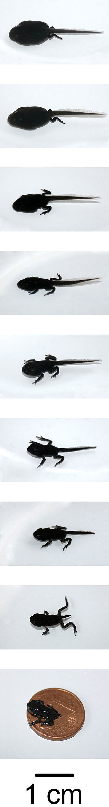
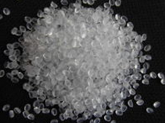
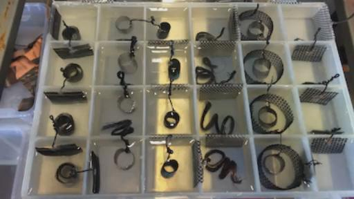
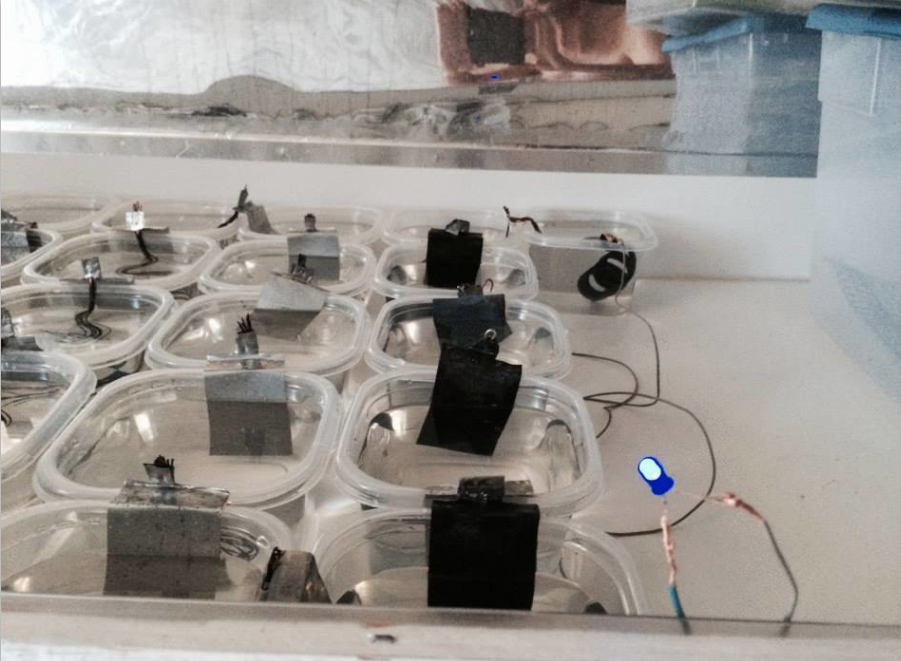
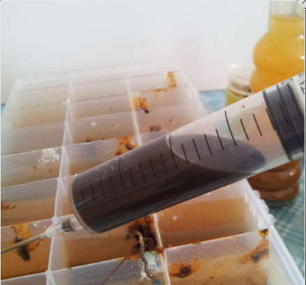
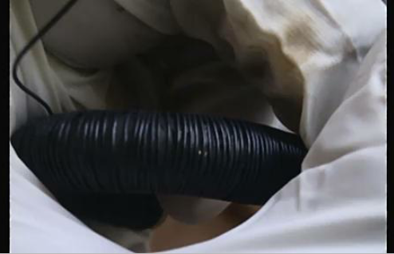
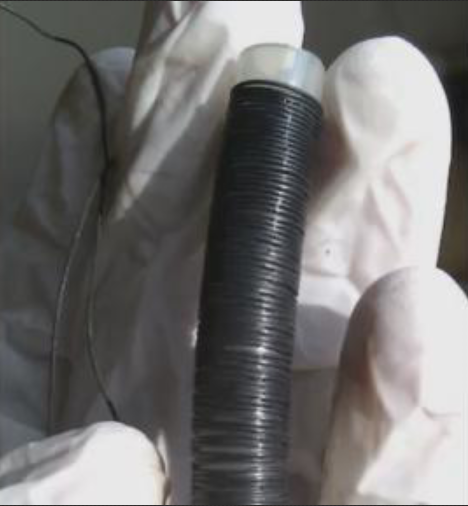

00:01:05
RICK：现在开始第22次教学，再一次地，我们和凯史基金会的凯史先生进行在线交谈，有凯史先生在太空学院那里。可能有其他几位也会参加我们的教学，像ARMEN或者JOHN，也许还有MARKO，他们现在基本上是在太空学院8月的假期当中。当然，凯史先生从来没休息过，所以他今天肯定会和我们再次在一起。我想大概差不多有3打（36次）的教学，凯史先生每次都参加没有缺席过，今晚由我来主持，现在我就把麦克风教给凯史先生开始。然后我们会有大家提出的各种问题，所以凯史先生，我们开始吧。
KESHE：大家早上好，晚上好，下午好，无论你在哪里。我能听到我的回音，让他们调节一下吧。
VINCE：ARMRN你能把你的麦克关闭一下吗？
ARMEN：好的。
KESHE：是能听到回音，现在好了。（刚开个头又有回音了03:13凯史继续讲）好的，没有问题了。还像往常一样一直就是这样的。现在的情况就像我说过的，这3-4个星期当知识寻求者们不在的时候我在尝试给大家进行补课，有一些可能落下了需要做的事情，或者增加一些知识这样使得大家能够更加的明白这些细节，我收到了一些电子邮件，还有一些问题在论坛里面提出了，人们在问各种不同的问题。其中一个问题就是为什么发电机的功率限制在3-4千瓦，是不是可能生产10千瓦或者20千瓦的发电机，功率的限制是由工厂生产的过程来决定的而不是由其他原因决定的。而在欧洲的一些市场上有一些限制，多大功率的发电机你能够生产其实是有限制的，有一些限制在你作为发电机产品之前要有一些限制。所以那就是为什么我们对欧洲的发电机产品限制在了3-4千瓦。
你们可以生产任何你想要的东西，但是这取决于你想用这套系统生产多少能量以及用这套系统怎么生产。我最近得到了消息说俄罗斯已经准备造出14千瓦的发电机，用一些特殊性能的材料，所以说做多大功率的发电机是没有（技术）上限的。就像大家知道的世界上有很多的科学家正在相同类似的事情上进行工作，他们已经有了U盘里的专利，他们现在在扩展增加这方面的知识。另外一件事情就是Ojaszirver（拼写未确定）就是一个主要的宇宙学家他就接受别人的采访，我的夫人就调节到那个节目听到了。这位先生读了这本书。他听过我所讲的，换句话说，他重复了书里的一些片段，就是在三本书里的内容还有我在部分接受电视采访播出中谈及的，他就强调了目前的知识太陈旧了必须要进行更新。新的科学界会采用这个知识，使得这个关于能量和质量以及宇宙的知识通用综合起来。另外一个问题就是，关于最新版本的能发电机的质量是多少，那么目前的重量大约是5公斤，但是我们最终版的重量可能会比这还要小一点。还有一个特别有意思的问题，但是是一个特别长的问题，但是我现在给大家读一下，也许你还没有去论坛看。这个必须要回答，然后我给你们解释为什么。这个问题里说“我有两个问题要问，希望你能够在下一次的讲座中能够介绍一下就是：“第一个问题，从盐水当中的盐里收集出了甘斯，就是在氨基酸这种脂肪的下面，脂肪在上面就形成了。我的问题就是当我想为自己来进行实验的时候，就是在食品方面还有如何接触在这种装满盐的小单元的上面形成的脂肪层，就是会给我的身体提供我所需要的所有能量。所以我就进行了一个测试然后碰触了上面的脂肪，没有感觉到什么，只是感觉到有点冷。所以我想这是因为水，所以我决定把我的手停留在水里长一点时间，大概有5秒钟的时间，就发生了一个特别有趣的事情就是，我感觉到眩晕，我并不是说有一点晕，为什么不是说有晕的感觉呢，因为感觉主要是作用在我的头内部，但是我就感觉到一点发晕的感觉。我的心跳也加快了，也许是因为我害怕了，我不知道。朋友们，是不是能问一下凯史先生这到底是怎么回事儿，我再也没有勇气去碰这个水了。”
你不要再鼓起勇气，也不要再去碰这个含有甘斯的水直到我们知道了这个材料的所有方面。因为知识寻求者们会在这里告诉你们，我一直在告诉他们，其中有一个人自己自作主张不守常规的做了，然后就说我喝了没有感觉到什么，就是不会感到饥饿。你会从水中从这个液体当中吸收到你所需要的。另外一方面，像你们知道的我们正在进行实验，有一个非常有趣的事情发生在我们的实验当中：大概在3月或者4月的，也许是5月份，知识寻求者们选择了2个装水的小容器，然后我们放了5个青蛙的蝌蚪在里面，我们后来觉得这个容器太小就换了大的容器，换了一个差不多跟小鱼缸差不多大的容器，我们就给一组只喂养CO2的甘斯，另外一组就是完全自然变化的过程，我也不清楚知识寻求者们喂了多少次CO2甘斯，在过去几个月中也许1-2次，但是在过去的2周当中大概10多天的时间里我观察到。
ARMEN：我们好像喂了4次。凯史先生。
KESHE：多少次？ARMEN。
ARMEN：4次。
KESHE：哦，4次。自从你们离开这里在过去2周内我又喂了它们4次。所发生的事情有一个非常非常奇怪的现象，我对它们基本上2-3天进行一次录像，就是我们没有喂甘斯的自然发展的那一组里，只有2个活下来了其他的都死了，我记得从水池里
面拿出来的时候它们都是差不多是相同的尺寸。水也不是非常清洁透明的，而我们放入CO2甘斯的那个水是特别清楚透明的，我们会看到氧气气泡从底部的生物中冒出来，就是我直接从池子里带来的，里面可能会有一些食品。

但是奇怪的是我们喂养CO2的那一组，一个小蝌蚪已经变成了青蛙的样子，第二个已经长出了它的腿。可能会在下面几天或者几周就会变成青蛙，还有2个还是在蝌蚪的状态下。但是那些青蛙就是在外面自然环境中的蝌蚪。它们已经有很多变成了青蛙我们也在花园附近看到了它们。所以在常态情况下它们现在都应该完全变成青蛙了，但是在这2个情况下都没有发生，这是因为在盒子当中的食物循环，还有它们所需要吃的东西和自然的环境是不同的。我们在这个时候提出这个问题的关键是：我在过去2周中观察到发生的一些事情是非常奇怪的。这些蝌蚪有了腿，腿相对于蝌蚪的身体而言是很正常的，它们是特别的清晰的，我们就可以看到它们。但是蝌蚪变成了青蛙后，身体跟原来比较就特别的长了。手和腿特别特别短的，而且渐渐的变成了透明的了，我把它们进行了录像，当知识寻求者们回来的时候他们会把这个视频上传你们就可以看到了。它们的尾巴已经消失了。但是我很多年观察蝌蚪变成了青蛙，自从我的孩提时代起就从来没看到过这种情况。腿变成了几缕头发丝那么细长，但是身体就变得更加的长了。
是不是这些蛤蟆会变回成鱼的状态？或者它们现在在过渡时期我们还要去看是否还变成正常的青蛙。它们的前脚特别特别小而且特别特别的薄。腿还是那样。你必须要看到它们的手才知道它们不正常。

必须要亲眼看一下，所以说，请大家不要随便做实验，就像我第一次开始就跟大家说的。不要亲身去测试这些材料，直到我们被其他的科学家们证实。发展这项科技使得我们能够确定什么是所需要的，现在有一个关于氨基酸脂肪的讨论，就是在上面形成的脂肪它们是什么样的形态，我们已经把这些给科学家们去分析，当我们拿回到结果的时候我们会公布出来。所以不要把你的手指头放在里面然后去喝和吃它，然后再去说有一些错误的事情，那个人是错误的。很可能你会丢失你的尾巴或者你的胳膊，或者它们会变得薄。我们必须看到这些材料能够给它们带来什么。是不是只通过加入CO2还是是否可以加一些其他的脂肪，就是在水上面的脂肪层，是不是可以变成了不同形态的青蛙。所以那些认为我们很愚蠢的人呢。这种愚蠢是由于他们又回到了那种局限当中或者他们试图去自作聪明的做些什么。我们一直在说，一直在警告不要去碰触这些材料。要带着手套，从一开始就这样告诉大家。如果你想喝它然后说来证明有什么错误，或者说谁是错的，然后你就要自己来承受你自己行为的后果了。直到这些材料经过完全的分析。这些材料具有很高的能量，这些能量是在等离子体状态下的，我们在过去的3-4年在农业领域里，有一位从事农业的先生他就告诉我，有一些小麦变回成了草，它们长的就好像回到了最原始的草的样子，在几千年前的状态，在我们还没有把它们培育成小麦的时候，所以如果这个发生在青蛙的身上，会不会使得这些青蛙变成原来的状态，变成了鱼或者变成不完整的鱼。因为现在这些青蛙的形态状态不是正常的，非常像一个长方形的样子，然后在下面出现了2个小爪子。然后有2个爪子在上面出现，是特别特别细的爪子。可能你们还没有见到过这种东西，我们已经对它们进行了录像，知识寻求者们回来就会把它们放好顺序给大家进行展示。所以不要去碰和吃这些材料，就像我之前告诉过你们的那样。我没有办法告诉你具体的状态是有冲击的，比如说什么样的状态下你会感觉更好，还是可能会感觉眩晕，或者其他的反应。你身体会对这些东西产生什么样的反应，在实验室中我一直在跟这些知识寻求者们说，如果你不小心碰到它们，不要去摩擦手，要直接拿流水去冲洗，这样就会把这个东西冲掉不会被你的身体给吸收掉。
RICK：在现场昨天听到一个做实验的人说的话，这个人就说不小心的手就碰到了甘斯。他注意手指头以前是有一个疤痕在很多年前留下的，但是这个手指的疤痕组织上面就开始有了刺痛的感觉，实际上他是碰到了那个东西然后之后24小时候就会了那种刺痛的感觉，所以他就知道了是有很多的能量在那个物质上。所以知道了不应该物理的去碰那个东西。
KESHE：是的，还是让那些科学家为我们打开这扇门吧，让他们去做研究发展然后告诉我们这些脂肪氨基酸是如何改变的。就像你们知道的在一篇论文当中，就是我写的关于氨基酸，石油，蛋白质。在目前有一个非常虚伪的说法，就是关于石油的产生。我在这篇文章当中写过，这些石油不是来自一些动物的身体，并不是这些残留物被埋在了地下上百万年后产生的。这些石油是一直不停的通过我们的大气在产生着的，然后增加到的蓄水池当中。所以就是我们用于汽车和其他事情上的这些石油会一直存在的，只要这个地球在这个位置上，在相对于太阳系的位置上就会一直制造这个石油，我们永远都不会用光石油的。这是绝对不可能的，没有这样的机会。
看上去我们使用的速度越增加会生产石油的转换就会更多的发生，所以这种油的产生。就是在这些石油行业当中告诉我们说这些油会在下面多少年就会用光，这只是一个谬论。但是我们必须要明白，我们在盒子单元的上面所制造出来的的是一个什么样的油。我们都创造了哪些条件才能够变成我们能够应用的油，我在听一个美国的政界人士和一个美国的科学界人士进行的一次访谈，在访谈中就说了矿物燃料的形成是一个完全是荒谬的，因为那是根本是不存在的情况。你可以自己来核实，你们没有恐龙的资源，但是你们可以在你的盒子上方制造油，所以这种产生石油的说法是一个谬论。如果是这种说法的话我们就不可能完成我们现在完成的东西。这个是根据你怎么样把氨基酸变成了你所需要的，根据你所设定的环境和条件。这个就像是在几年前俄罗斯人用叶子制造石油，无论什么，就是利用了高压锅制造了压力，然后施加一定的压力在树叶中提取油，然后他们就说可以从这一类东西当中制造出油。如果你问我我一直喝和吃的油是什么东西，我吃了它们但是什么都没发生，你必须自己把这个油在应用之前变成你所需要的。如果你想把这些变成可以进行燃烧的油话，或者将这个变成炸东西的油，这些技术在将来由科学家们必须进行发展，然后才能够量产。所以换句话讲，你不需要制造所有的这些材料，把这些变成类似肉的形状，你只是需要一个关于这些蛋白质的表单，你现在有了基础但是你必须在这些基础之上去工作，然后变成你所需要达到的目标。所以请大家就像我之前跟大家解释过的不要把手指头放在里面，不要去喝任何东西，然后这之后又来说这个人真蠢，这个根本不起作用。你将会为你自己的不端行为付出代价的。这些人他们喝了或者吃了说没有发生什么。你只是拿一张纸巾，我就向知识寻求者们所展示了，就用这个纸碰上面这个油脂层，然后仔细的观察一下或者用一段铜线，把它放在最上面的脂肪上，然后放到纸巾上，你会看到氧化铜还有CO2甘斯和还有不同物质一起的混合物，就在你提取出来的氨基酸（脂肪层）的结构当中存在着。所以这个结构就是和这种氨基酸脂肪连接起来的结构，就会决定它变成什么进入以及什么会变成你的神经系统。它们就变成鸡或者蛋白质，或者鱼的蛋白质，所以在这个CO2的过程中，我们在大概2年前见过CO2用于这个麦子的情况，在一个基金会自助的项目当中，现在我看到了动物生命的复制现象。如果这个动物是一个造物，我为它的灵魂祈祷，我希望我们没有做错什么。如果它要是转回到鱼的话它会非常具有历史意义，然后我们就会明白这到底是为什么。我现在在对它们进行录像所以你们会看到这个细节，这些腿和胳膊会有多么的细。它好像要变成了鱼的形状，但是它是怎么变的还有它接下来会发生什么，很有可能ARMEN回来的时候会给大家贴出来，还有MARKO回来的时候。所以请不要去吃和碰那些材料。即使你要去碰纳米涂层的话，也一直要带着手套。也就是我一直告诉知识寻求者们的。第二个问题就是说，这些在这些铜线和这些装盐水的盒子单元外边形成的白色粉末是什么。这些东西就像在汽车电池里形成的东西，所以我看到的这个东西是什么呢？”这又一次的是由于在形成氨基酸脂肪的时候和盐还有和在物质状态下的CO2甘斯在一起形成的组合，这些东西通常都是其他的盐的混合物导致人体的形成，在一个百万年的过程当中最后形成了人体。这个就是实际上已经发生过的。所以我们现在看到的是有相同的盐，我们有橘黄色的，蓝色的，还有白色的盐，如果你把这些线正确连接的话，然后你会在某些线的上层会得到一些颗粒晶体

还有这些连接的线上，这个是吸收了不同种类的CO2，就是CO2的转换，跟你在吸收CO2甘斯，跟你创造的环境有关，我们从一开始会在上面看到了这些晶体颗粒，自从我们在实验室环境中有了动态反应器就出现了这些。所以你所得到的是这种一种自然的生长，它们会一直生长，会产生很多很多出来。如果你放入了一两勺盐在一个格子当中，或者用100克的盐放在容器当中，然后把连接的放在这里面作为一个单元，但是它们会生成2-3公斤的盐。它们会继续应用在环境当中存在的条件开始来创造生命。有一些知识寻求者们也看到过我有一个盒子，就是我叫做生命之水的盒子。他们看到了其中有4个容器，大约有3年时间了。在那里或多或少的，我想有一公斤一公斤的像盐一样的材料在这个容器当中一直在长出来。所以我创造了这种特殊的条件，就启动在这个星球上最初生命开始的那个过程。我在材料当中看到了新的生物和新的生命。所以你所看到的这种白色的像盐一样的东西，就像一个电池一样。如果你允许它非常快的成长的话，有的时候，在上周在一个单元当中，它长的是如此的迅速可能会把实验室的地面和桌子上，所以我把它们放在水槽里，所我把这个单元破坏掉
。因为它突然一下子从相同的盒子当中就产生了这么多的质量。所以这就是这个情况下，环境和材料在环境当中被应用于制造条件的方式，就是很像是生命产生的条件而不是一种化学反应。这是等离子体的反应，它们在自己喂养自己。它们可以长得特别快如果你能够保持这个环境持续几个月的运行，我已经保持了3年了。你会看到你创造了这个环境可以制造出新类型的生命。所以我们正在增加这个行星上的生命的数量。因为行星会决定在这些材料中产生什么。那里有氨基酸和在这过程中你的甘斯所释放的东西所结合，在你的过程当中还有一些盐，原来是在容器当中，但是这个环境改变了之后就会变成你所需要的。当你看到这一类事情开始产生的时候，给它一个大点的容器然它成长，然后让对它进行观察几个月半年或者1年，如果你有时间和空间还有耐心的话，有一个问题就是ERIC问的，我认为我和RICK讨论过这个问题，这个问题就会引发出很多问题，大概有8个问题。
RICK：我想是ERIC问的。
KESHE：是的，是的。是ERIC问的，关键是这个问题比较简单，但是另外一方面，这个就像用勺子去喂一样，不管什么东西就是什么是你不能做的，然后我不能够达到就是我们的错了。这个实际上就是一个科研的过程。当你不能够继续下去了，你就会发现你正在做什么了，然后在你的路上你完成了什么，然后你能够发现你达到什么地步，这个我之前和RICK讨论过。就是我们在这次教学之前在FACEBOOK上面讨论的。
RICK：我们现在对人们常去说一句话就是：老问这种问题，就是我这样做那样做的话结果会是什么，我跟他们回答说，好吧，你实验然后把这个结果告诉我们。这个是我们经常会说的答案，因为他们必须要自己去实验看看有什么样的结构，对于他们所进行的特殊实验，这样你就可以报告回来和其他人的实验进行比较，有的时候会是相同类似的实验，有的时候可能会是完全不同的情况。大家应该去安全的尝试，然后你看会发生什么，会有什么样的颜色，有什么样的电压和电流，还有其他的条件。
KESHE：是的，但是事情是。（30:25-30：50没声音）你知道把线缆放在桌子上，我认为这位先生应该这样做，对实验进行录像，然后在论坛当中或者其他地方发布出来，然后其他人就可以照着做。因为我认为我们的这位德国朋友显然在这方面非常的专业。在LIVESTREAM上有部分的声音丢失了掉线了。现在可以了。所以当我们把这个材料寄给了这个先生的时候，我们还没有把这个视频放出来。他收到了DHL快递的包裹，他已经签收了，他展示了包裹，然后他用剪刀然后割开了包裹，还展示了外包装。就是一步步的进行着操作。最后他把整个的包裹送回了我们基金会。大概有2，5公斤。就是包括了种子和土壤，这个过程是非常简单，我们曾经在福岛的污染视频中展示过。就选择这个电线和你所需要的材料，就像我早一点时间谈到的。有一些人用氢氧化钠有一些人用氢氧化钾，有一些人用他们的混合物。这个都跟你想扩展知识是有关的。你可以用不同的方式，我们可以用不同的方式。
RICK：凯史先生，我想他的这个主要是想展示，铜线在放入烧碱之前是不是有一些额外的准备程序要对铜线进行处理呢？
KESHE：不是的。没有任何的区别。
RICK：是不是有其他的特殊处理呢？是不是就把铜线的表面给剥开，这样会怎么样呢？就是比如有的人可能会先弯曲，或者可能有些油脂什么的会从手上弄到了线上。
VINCE：碱液会把这个处理掉，没事儿的。
KESHE：是的，碱液可以处理。还有热量。热量可以把这些都清理掉。如果你要是在不同的塑料容器里面做这个实验的话，你叫什么呢？可能会有一些残留物，可能会在其他的而一些塑料容器中不好用，这个过程就像我在上线教学之前之前就解释过的。就是在我这么多年做的过程当中，我体会到了。不取决于我要这个材料怎么做，不要把这个线的塑料外皮剥掉，当涂层进行完成之后，就像你剥香蕉一样，在铜线上面顺着划开2-3条，就可以把线的塑料外层剥掉而不破坏涂层，这都是一些你需要自己发展的小技巧，就可以看到你的改进，另外一方面，如果你要用其他材料的话，你只是这样就会扩展了你的知识，增加了我们的知识。比如，你在每一次涂层处理后都应该加入一点钙，但是我们从来没有做过这个，如果你想做的话你就做一下然后告诉我们有什么样的结果，不管什么时候在我们的系统当中有钙是从水源中来的，但是偶然的由于我们所使用的水的性质，我们从来不用蒸馏水制造纳米涂层。这个是我们之前讨论过的。因为钙的话会使得层与层之间的连接，使得原子层之间进行连接。
RICK：你的意思是我们用自来水管里面的水要比蒸馏水好嘛？这个是什么原因呢？
KESHE：不是的。我们从来就没有用过蒸馏水，我不知道，也许你用蒸馏水会有均匀的纳米涂层。但是有个事情是我必须要跟大家解释一下情况，因为当你往下读的越来越多的时候，会有这样一个问题，能量会怎么样流过电线，然后去标记纳米颗粒的南北极，当线缆被悬挂着的时候，怎么样用万用表去识别用什么样的方法进行检测它。我们上周谈论过这个问题，这个改变是根据线来进行的，有一个事情我必须要提一下关于这些纳米涂层的事情，有很多让人困惑的地方而且我看到了在当今的科学界，伴随这些相关的论文和剩下的部分都会被发表，他们说纳米涂层是有磁力或者磁场的或者什么，我现在在写一篇论文，希望在下1-2周之内完成，我上周曾经要求德克为这篇论文做一些图片，如果他能够本周完成这些照片的话，我们会科学的解释这些纳米涂层它们是如何产生的，甘斯是如何产生的。
关于电流是怎么样在其中这些材料中流动的，所以没有任何可以模糊的东西，就是关于为什么会产生纳米涂层，以及为什么会表现成磁场的状态，还有一些其他的部分。我对这个细节用了很多的解释，在不同的教学当中。但是现在我要把它放在一篇文章当中，这样让科学界中的其他科学家明白为什么纳米涂层会有这样的行为表现，所以我们会展示它是怎么样做到的，这个原因要追溯到，因为有人几周前在英国航空展的时候展示了纳米材料，他们没有办法解释他们做了什么，但是他们解释这个材料可以吸收，所以我会在这篇文章中很详细的解释关于这种吸收的层的一切，吸收的层级，换句话就是为什么我们会有不同颜色涂层。我们怎么样能够创造不同颜色的涂层，制造任何的材料来吸收什么样的光谱，所以这篇即将发布的论文中我们会解释很多的事情。不光是甘斯，纳米涂层，还有它们的表现。所以我希望我对于这些问题进行了回答，你决定你想要怎么去做，你如果想使得铜线一定要弯曲一下或者怎么样，我有的时候弯曲或者不弯曲，这跟我要从材料中得到什么是有关的。这个盒子的底部放的网应该是鸡舍的铁丝网，锌铁合金的，看到凯史先生可能用到鸡舍网可能是铁丝网，我们有什么我们就用什么。我们不会出去去采购，也许在将来你也许想要均匀的材料来进行量产的话，你必须要做这一类事情。我昨天跟东京的人进行了谈话，因为他们看到了我们生产这些材料还有这些线还有其他的一些东西，

如果我们要是大量商业化生产的话怎么样才能够生产的均一呢？我们和你们有相同的问题，可能不同工厂可能会生产不同的材料。有一些材料可能你要用的话可能会花很多钱。有的时候你可能会增加产生的能量，可能大概200-300倍，很容易就可以产生。所以如果你想得到1瓦或者10瓦，然后你就可以得到2千瓦，这个非常贵重但是可以被用于生产这种特别高能量的磁引力场的层在你的涂层当中。我就曾经用过铝的接线用于高能量的生产，有的人用过锌的线，就是所有的东西都可以试验。这个跟你就想怎么做和你想怎么样来使用这个材料有关，然后怎么样来用这个来生产材料。这个没有什么特别的规定，这个法则是很简单的，我会在这篇即将公布的论文中解释这个法则。这个法则就是你必须要来创造的条件要足够强，足够温暖，实际上就是这个热量必须要正刚好，在这个环境下能够在磁场上足够强，使得线的最上面的这一层原子结构的层，比如变成铜，或者无论变成什么材料，能够让它足够的松动，这样它们就可以变成单个的原子。但是这个层的下面的层会产生第二层的材料。这层你把它叫做纳米材料的甘斯，它不会变回成物质了。
就是因为你在它的周围产生引力场的条件。这是什么含义呢？这个很简单的就是，你创造这种环境，使得铜线的最上层的原子被加热了，但是没有溶解。但是因为有氧的存在，因为在NAOH或者KOH当中的氧，允许它能够产生一个磁引力场，使得这个物质保持在原子的结构，或者它自己保持在甘斯状态下。但是立刻发生的就是，下一层的原子结构在它的下面产生了，彼此挨着，在上面和下面以及在周围产生，这个物质这个原子就会处于它自己创造的条件下，但是它不允许它和其他的层有物理上的连接。所以你不会有这种电子上的连接，你有这种在原子之间的磁场的场体的连接，这个层产生的相当迅速，它们就会罗列起来作为一个层出现，所以我要求德克用图表的方式来展示这个。如果你放一个单元一个原子在上面，然后在原子的上边再放一个原子。然后在下面一个的120度位置上，然后再同样的方式，再反反复复的这么做，然后你会有什么呢？然后你就使得原子在其他原子磁场的三明治夹层当中了，然后因为不同层之间的磁引力场的不同，原子的每一层都会创造它自己的纳米涂层。所以这样每一个纳米涂层就不会跟下面纳米涂层接触，而是在上面漂浮着的。所以同样的，它也不会和气泡层（透明圆形层）相接触，也是漂浮着的。所以实际上就如同是原子的河流，因为它们是在一个平衡的环境条件下，所以在物质的条件下，他们以纳米材料的形式展示出他们自己。所以加热的整个目的就是要创造一个环境。你怎么样去做到，你用什么样的烧碱去做，就要用什么样的热去做到，是不是我们真正需要烧碱来达到这个条件呢？我们是不是可以还可以用炉子来做，制造这种特别低的热量。使得这种连续的纳米材料的产生，不用盐，是的，这个是可以做到。在将来我们根本就不会用烧碱，将来我们会创造这种加热的条件使得它足够的热，但是它不会到熔点，使得铜上面的原子释放它自己，然后被其他它周围的磁场捕捉保持着，以原子的状态被控制住。然后在上面一层层的覆盖形成了纳米层，所以你所看到的纳米涂层就像我之前所说的那样，是3，4,5万原子的层，它们一层挨着一层的在上面浮动着，但是它们是被磁引力场锁住的。所以你下一步所做的，你把它在相同的环境下给放回去就像你分离开的那样，就又放在盐水当中，然后现在你就允许这些原子的磁场彼此之间能够相互的分离开来。然后因为你有盐，你创造了足够弱的环境。在这种相同的条件下，你使得它再次的弱化，然后这个材料通常是会和来自水中的氧气连接起来，添加了一个氧气，这个氧气是来自于KOH，所以你就能够得到CUO或者CUO2，或者得到CUO3K，这个看你用的是钾或者钙有关，或者CUOCA，因为不同的光谱显示出不同的材料，和我们怎么样做这个材料是有关的。所以整个制造甘斯的过程和制造这些纳米涂层，用烧碱主要是创造那个环境，通过这种热量创造就是这种磁引力场的环境，使得最上面的一层的原子能够从它原来的结构里面分离出来。当它们分离之后它们就产生了自己的磁引力场定位。它们就开始在他们定位停止的地方开始产生拖拽的效果，换句话说，这个方式就像皮肤从下往上长是一样的，在将来你要用一定的烧碱吗？不是的。我们需要制造甘斯我们需要制造纳米材料，在太空当中。我们不能够带着烧碱，我必须要明白烧碱怎么样创造了一个环境使得这层原子离开了它的表面。
（第一次翻译截止00:47:12）
RICK：凯史先生，现在有一个在LIVESTREAM上问的问题是和金有关，为了制作金的甘斯，要通过什么样的碱的混合或者什么过程，对纳米进行涂层，需要什么样的水溶液能够制造出金的甘斯，只是用盐水还是什么呢？
KESHE：我们之前做过这个。我们是用完全不同的东西，不要忘记，在海洋当中有巨量的黄金的甘斯。有很多很多金的甘斯在其中海洋的水当中。
RICK：是黄金的甘斯在海洋里面是吗？
KESHE：是的，是的。那里有更多大量的这种黄金原子以甘斯状态或者什么状态在里面浮动，或者纳米颗粒的状态存在着。在地球上的海洋当中的黄金实际上就会沉积形成了金矿。但是我们现在的程序要吸取黄金的是很昂贵的，所以他们不会去做。当他们为了饮用做海水淡化处理的时候，比如在波斯湾，在沙特阿拉伯和其他地方，有很多的事情要做，一旦他们进行这个吸取的过程，他们遇到了这个问题，但是他们不知道怎么样去处理，所以他们就把它给扔掉了。但是那里有很多的黄金来生产纳米涂层的黄金，你需要去创造它，因为我那么做过。但这个不是很简单，但是是可以做到的。就有一个闲坐在我们基金会周围的人，他就想诬陷我们基金会，他就说你不明白这是氧化作用你要回到物理课堂去。现在顶尖的机构就确定了，（00:48:06
confirmed that how the same thing which is going back to physics class
????????,所以你们可以回到最早的物理课本上。所以你可以制造白银的纳米涂层，你可以制造黄金的纳米涂层，这个是很简单的。但是如果你创造了正确条件的话，你就可以制造甘斯态的黄金，我们没有看到任何这种对于甘斯黄金的需求。在你的反应器当中，你需要等离子体反应器的多重的工具，你需要进展了解到更多关于氢气的等离子体，然后你用氢气的等离子体和里面的中子的等离子体，金的甘斯和黄金的纳米涂层，当你制造的时候如果你用万用表碰了它的时候，如果你要是你的万用表调节到电阻的位置上，你就看到黄金实际上会走到1，（证明了绝缘性），用左边完全是电阻的一侧的来测试。然后你就可以测量它，如果你想做的是完全可以测量的。在老的凯史基金会网站上就是KESHE
TECHNOLOGY的网页上，我们放了一张黄金甘斯和白银甘斯的纳米涂层的照片，我在在实验室某些地方仍然留着它，是一个凹槽的盒子，有3个埃及人的图案在表面，背面是银的，最上面是金的。然后我们展示它们所有的都是一样的。我们可以非常容易的制做纳米黄金的层，但是我看不出来你为什么要做它，它有什么样的应用，这个做法是用相同的过程，但是你必须把它以一种特殊的方法设计才能够产生出来。还有其他问题吗？
VINCE：我昨天，你能听到我吗？
KESHE：能听到。
VINCE：好的。所以我昨天在反应器组里提出一个问题，就是我们明白了如果你给铜做了涂层你就是得到铜的甘斯，就是氧化铜，如果你给锌做涂层的话你就得到了白色的东西比如CO2，还有其他的甘斯。
KESHE：不是的。这个是一个组合，你必须很清楚很清楚的明白这一点。（又强调了一遍）是你制造的环境产生了物质而不是你具体用的材料来创造什么物质，当你有锌和铜的时候，那个环境使得你生产出了CO2，如果你具有铜和不同形式的铜，或者有铜和锌在不同的组合里，你需要生产氧化铜或者CH4（甲烷），甲烷的颜色是和氧化铜的颜色是非常接近的，是非常非常接近的。然后你用相同的材料，我们和ARMEN在实验室当中也观察过这种材料。
我们用相同的材料和相同的盒子，但是因为在每个盒子里的小格子中的磁引力场都是不一样的，我们有的地方会得到CO2，有的地方我们会得到CH3，有的盒子里我们会得到氧化铜，即使在一个MARKO设计的实验当中，就是有一个新的东西在后边有一个小的电机，好像是ARMEN做的，我记不清楚了。我认为是MARKO做的。然后我们可以以某种方法把发电机呢，接近到我最初为了得到CO2甘斯制作的盒子展示出灯光的单元附近，然后我们改变了盒子里的一个区块里的环境，然后整个盒子都改变了，所有的CO2甘斯都改变了颜色，材料也改变了，所以这就是你所创造出来的环境。这个是非常重要的，因为你用铜和锌，然后你就会得到锌或者什么东西，这些都是很荒谬的。只是铜和锌创造了环境条件导致产生出了CO2的物质，而不是锌或者铬或者无论什么，这些说法都是谬论。我对这些都做过拉曼光谱仪的测试。
VINCE：我只是问一个普遍的问题情况。（笑）
KESHE：是的，你说的是对的。只是我想进一步详细的解释一些。
VINCE：是的，所以你回答了这个问题。
ARMEN：凯史先生，我现在设置了同样的方式，用到锌和铜，你知道我实际上是2天前才刚刚开始做的。你可以看到设置当中只用了铜和铜的时候，它总是产生氧化铜。现在我用铜和铝的设置，现在就开始冒气泡。就像你知道的就像氧气，你可以看到的。我把他设计成用钛，还有黄铜的，然后我把这些放进来，大概一种就是有6个盒子，在一周之后你知道可能就会有更清晰的图片，所以我们就会看到哪个材料就会产生。
KESHE：但是它们里面哪个是做了涂层的？
ARMEN：我试了不同的涂层，我还有纳米涂层的钛和铜，还有铜黄，我也有纳米涂层的锌。
KESHE：你知道你在假期之前做了最后一个容器，你做的那个大容器就是有纳米涂层的铜和铜，它们都是绿色的。没有其他的东西都是氧化铜。
ARMEN：是的。我知道的，因为他们实际上是铜和铜的组合。
KESHE：是的。铜和铜，当你用锌的时候，因为MAREK在离开之前用了一大片的铜箔和锌，所以这个一直是在持续产生制造出的只有CO2。
ARMEN：是的。
KESHE：所以不同的材料只是给物质设置了创造的条件，所以会释放出相应的甘斯。
ARMEN：这个是可以明白的。如果我有铝和铝，我还有铝和铜。所以一周之内我看看会产生什么材料。
KESHE：铝对你来说会很有趣，因为铝的涂层是非常松散的。不会像锌或者铜那样比较紧密。
ARMEN：是的。
KESHE：这些释放出来氧气是碱液当中来自NAOH的氧的，它是非常松散的，就是这些气体变成了甘斯。然后在现在的这种状态下它们将自己释放出来。
RICK：我有一个问题，就是里面的氢气在这个状态下是怎么样进行反应的，因为当你在烧碱当中放进了铝的时候。开始制造出氢气的过程中，就是在氢氧化钠中这个气泡开始往出冒，这个是怎么样相互影响的呢？是怎么样影响这个过程的呢？
KESHE：我的想法是，当然我也可能是错的，氢气是作为气体释放出来的。
ARMEN：是的。
KESHE：只是因为这个环境。什么？
ARMEN：当你把铝放到烧碱里。
KESHE：对，在这个碱液里，当你释放氢气就是氢气。
RICK：就是常规下的氢气分子。
KESHE：它最初的状态是原子的状态的。
RICK：那么在这个表面上会有等离子体的影响吗？或者有什么会加入到其中，或者也许我们以什么方式能够利用这种原子的氢气？
KESHE：你可以用它在你的等离子体反应器当中，这是最好的一个用法。如果你可以保持它在通常的状态下的话。（58:01 the best
one ,if you can keep it in ???state）
ARMEN：凯史先生，我得到一个很好的电压，实际上是来自于LED灯的，可以点亮LED灯。
KESHE：啊，你打算启发一下你自己了。（大笑）
ARMEN：是的。（大笑）
KESHE：你终于，我想你把这个展示给JOHN了吧？

KESHE：你放了多少个盒子来点亮LED呢？
ARMEN：我有7个。
KESHE：7个盒子吗？
ARMEN：不是，是7+0。
KESHE：什么？
ARMEN：是70个单元。
KESHE：哦，那挺多的。但是所有的材料会由于吸收被堵塞住。你有一个办法可以增加电流，使得它亮更长的时间。这个我以后会跟你详细的解释或者你可以做一下。你可以一直不需要接触液体面来创造条件，使得纳米涂层一直保持干净的状态，它就不会被其他的材料堵塞，不会被其他的物质所堵塞。
ARMEN：是的，有的时候我就摇晃它，那个东西就会下去。就像清洗那样。
KESHE：你就是喜欢晃动它，所以这就是问题拉。（两个人都笑了）这就是一个状态条件，是可以做到的。但是只是需要更好的方法来做到它。
RICK：对于这个事情，我们有一个问题，有的人对于这个反应器的话，想试着不用去旋转而只是通过振动，可能跟你所讲的相似可能就会提供出一个效果，可能使得粒子能够悬浮起来，场体就会按照那种方式被组合起来。你对这个震动代替转动有什么想法吗?
KESHE：我们制造了这种振动，换句话就是通过纳米涂层在这个过程当中，但是我从来就没有机会来实验这种振动会产生什么样的效果，因为你在涂层之间如果利用振动的话，你会制造释放出极紫外线在氮气和氢气中，我现在在实验室当中对反应器进行的一项实验就是和这方面有关，因为你知道因为两组是用气体是用等离子体的，然后有一组是甘斯，就像我上周所说的，我现在开始沿着不同组之间的边界移动着探测器，非常有趣的是这些反应器的强度下降了很多。就是因为我们没有在这里面来监视它，在某种程度上，就像我们之前每天都一直比较活跃的对它们做出一些什么，现在它们就在自己进行自然的过程，我认识到它们有一组就是在盒子当中的一组，在那个环境当中正在维持着它的等离子体，但是强度低了一些。但是在过去几周当中，因为我们把它们的星体造型分解了，我们只是把这第二组装入气体的反应器给放到了中间的位置，然后我们把甘斯系统放在了另外一边。现在所有的电机都关闭了只有甘斯的反应器在旋转。然后我把外边的探测器从外面的一个地方移动到另外一个位置上，就是在两组反应器之间的位置上。然后我现在开始给中间的这组反应器加入了气体，有氢气，氮气还有氦气，我们看到了实验室里的这种整体环境的磁引力场的增加，它有一个内部的增加。这并不奇怪，但是是为了确认一下场体之间相互影响的正确性，反应器1放在距离中心反应器附近的位置，然后功率在过去3-4周内下降了30%，我想有1.2-1.3安培，现在降低到0.9安培，最后一个反应器在设置中仍然保持着它的最大程度的功率，但奇怪的是，它的总体功率在过去的3-4天里下降了20%，自从我开始加载了中心的反应器，就没有忽视过它。因为我们一直集中精力对左边的反应器，我们一直在对它进行工作并且对它进行输入，我们在它的设置上留下了矿物质，它就放在那里，因为我们知道我们在它里面留有一个等离子体。
我们对它做了任何事情。所以我花了几天时间输入氢气，我开始看到了在整体环境当中的增加，然后我在两天前的早上开始增加氦气，然后在下午加入一份的氢气，然后昨天早上我又加入了一份氮气，中午又加入了一份氢气，然后我就看到了场体在系统总体环境上的3个立体方向上的增加，但是现在我们立刻就看到了对甘斯反应器电机输入的电流供应降低了，
就是在我们往中心的设置里输入气体之前，它们或多或少都是一样的，就是在知识寻求者们离开的时候，ARMEN在最后几天里进行的设置。所以这确认了一点就是甘斯材料创造了他们的磁场，而且它们是更加强而有力。我所看到的呢，因为那是一个非常小的核心，我想ARMEN放了混入占据整体30-40%或者25%的甘斯，其他的都是水。现在通过运行设置在中间的反应器，三组反应器已经开始相互影响了。在接下来的1-2周内我会往其他的反应器里也进行气体的输入，就好像有一个混合的中心点，来看看外部的等离子体增加的交互影响会不会影响甘斯的能量，所以这个是一种很好的办法来测试甘斯的能量。我现在在试图想起这个数字，因为数据好像是3.3V电压，5.1安培，现在好像是2.9V电压，3.8安培。这个是特殊的电机，我们现在在等一个电机的发货，这个电机比其他的有更大的功率。但是在过去一周里，都停留在了3.3,
5.1，只从我们开始给中间反应器充气之后，然后三组之间就开始出现了相互作用。功率从大概16瓦降低到了12或者比12瓦更低的功率。我们也在接近中心反应器的反应器组里看到了这种相同的作用。所以我们现在可以看到一些比较有趣的结果，这三组完全独立的反应器之间的场体相互作用。一个就含有自然水。
RICK：凯史先生，在LIVESTREAM上有一个问题。这个先生说，对于那些气体反应器来说，我知道它们通过旋转的作用可以制造极紫外线，我不明白转甘斯的反应器会是什么样的效果，你能对这个进行一下解释吗？
KESHE：甘斯就是一个等离子体，但是是在一个接近物质的状态下。所以你如果放在那不管它的话，它会沉积到底部。然后我们所做的我们知道如果把一个液体拿出去的话，它会变成一个粉末。所以我们把它保持在水当中。那么动态的等离子体它会自由的旋转。我们是不是可以把水给拿出去，然后加入一些其他的东西，使得它们等离子体在它的状态下呢？是的，这个是可以做到的。但是这个需要看发展看看我们发展到什么地步，如果我们可以把水尽量移出的话，我们尽量让它自己独自待着的话我们就会得到一个大脑的结构。我们现在还是在关注这些反应器之间的相互作用，但是我们现在在寻找怎么样能够实现动态的飞升效果，然后制造一个足够强大有力的场体使得我们可以看见实体，我选择做这个的理由就是像我一直所说的，JOHN知道的，将来在于陶瓷。但是对于甘斯材料如果你不转的话，它们就会沉下去变成我们大脑的结构，我们在楼上的教室里做了这个，我们就放了一个盒子然后它自己就发生了转变了。我就看了一下，它们产生这种白色场体的流动。我们可能在它的中心失去了它的脉络。没有，它还在另外的一边。但是我们看到材料是在里面静止着的，没有产生一个我们需要的动态的场体。所以它并不产生等离子体，等离子体的场体不像在反应器当中氢的等离子体，我们用的已经是形成了氧化铜的小型的等离子体，还有其他的材料。这个是很有趣的看到就是每一个反应器怎么样展示它们的能力，因为就像你知道的每一个反应器内有不同的甘斯，我们必须要动它，让它成为动态的，要不然它就会变成了一个大脑了。有其他的问题吗？
VINCE：所以我想要继续做，看看我能够得到什么。由于这种铜和铜的组合，我们在某些条件下看到了绿色东西。在铜和锌当中我们看到了一些白色的物质。我看到了黄铜，和其他很多材料的组合，除了铜以外，也没有任何一个单一的元素，所以我只是想证实一下。我不认为用黄铜我们会看到相同的事情，如果我们能够用一些含有黄铜的元素，如果你能明白我指的是什么意思。
KESHE：它是一个复合的东西。
VINCE：是的，复合的。所以我们会不会得到些不同的东西，因为会在分子之间有场体的相互作用，而不是这种物质的层次。
KESHE：是的，差不多了。如果你能够回忆一下回到上一步，就像我们解释的关于最上层的原子的结构，在最上层的原子的释放，就是在铜线上面进行的。
（第二次翻译截止01：11：30）
就是变成纳纳米材料的地方，现在因为你有一个复合的材料。现在它取决于在它的最顶层释放的东西是什么，镍，铁，无论他们混入黄铜中的是什么，所以在那最上层的原子结构的顶层的东西在达到那样一点的时候，就会决定所有纳米材料或者甘斯释放出的光谱是什么，或者根据你所提供的东西。
VINCE：我之所以提出这个问题就是因为我还在做一个实验，就是纳米铜涂层的铜箔，有CO2甘斯层在里面，所以我仍然必须要观察在那里出现什么，我在试图想把这个联系起来，就是不用甘斯和铜，我只是用了不同的这些元素本身，然后做成类似那一种的涂层，所以我就是在尝试给自己进行解释，我应该看下这个现象，就是不同组合之间的不同，因为这种等离子体对CO2的吸收和对铜的吸收。这个就是不同材料的形成的这个层，应该几乎是以这种相同的方式表现出来的，我说的对吗？
KESHE：差不多吧。但是因为就像我在实验室里看到的，我们制造的甘斯可以是完全黑色的，基本上是完全黑色的。

VINCE：所以说等离子体也是根据你所做的涂层，所以我们看到的甘斯在我看来只是这种动态的尺寸的变化增加，所以你可以看到他们，跟涂层电线里面的等离子体进行比较。
KESHE：没错，一样的。这就是我们从一开始就说过的。你把等离子体给释放出来，就是在一个三维的空间里面，在这种液体的条件下。在那里就是纳米涂层周围的条件，你可以看到在纳米涂层里发生的。你的一边有铜，第一层涂层就是在最上面形成的。所以这个中心就像一个做饭的锅，但是它们都是单个的个体，如果你能够看到的话，它们都是以个体形式在锅里的。然后你往里面加入盐之后。
VICNE：所以我有另外一个视频能来解释这个问题。
KESHE：好的，让我来给你解释一下。当你得到了这种黑色甘斯的时候，这些黑色甘斯可以吸收所有的能量光谱，我们在这个实验室当中我们有，所以这个是一种混合体。这些在甘斯状态下的原子结构的材料在一个单元中变成了这这种分子甘斯，那个分子甘斯吸收整个光谱。所以我们在实验室里也有，我们有的纳米涂层就能够吸收完整的光谱，这种材料就会从它所在的环境中的光里吸收所有的光谱，所以你也会得到这种黑色的甘斯，就像我们在实验室里得到的。我一直认为它是和铁有关的，但是在某称程度上，因为铁的这种原子结构是我们这个星球环境下的光的边界线。所以这是为什么你们会经常看到它是黑颜色的，但是这是一种分子的等离子体状态，是物质甘斯的分子状态，你需要一直往下做实验超出你所看到的极限，还有超出我们在这里面看到的。现在是科学家们应该开始教我们做更多的实验的时候了。我十分确定的是，你可以用你的甘斯在水中可以产生，如果你知道怎么做的话，在将来过程中你就会学到这个知识，关于怎么样产生等离子体，那个就是我们淋巴的等离子体。所以如果你明白了在肺中的转变的话，你可以把各种不同材料的甘斯组合放在杯子的外边，在杯子当中就可以形成你的淋巴的等离子体，就是从水中。某种程度上，并不是说你制造一个淋巴，但是你放入那个能量，就是淋巴支撑身体所创造出的能量，比如你可能身体缺少钾或者锌，然后你就在水中制造出锌的磁引力场，这种在等离子体状态下的作为甘斯在水中你就可以喝了。这就是我们在健康领域里做的。这个就是对知识的扩展，现在你创造了这些不同的甘斯，你现在可以看到了不同的颜色，这些不同的颜色就意味着它们会吸收什么和它们不吸收什么。你如果看一下锌元素的等离子体在你身体里面的颜色的话，然后你就会明白，你就可以制造甘斯具有这种颜色，然后把你的杯子罩住，然后它就可以把这个能量给水。这个水你就可以饮用，就是你身体所需要的锌。在太空中，我们创造这种条件是通过磁引力场条件的，这样你就从不会缺乏这种矿物质或者不同的元素。因为你通过这种环境的条件可以做这些，就像我们对我们自己所做的。就像我一直在说的我们通过呼吸和皮肤在吸收80%一天所需要的能量。有一些东西就像我最近所解释的，有很多我们不需要的材料或者一些能量，就是这种等离子体的磁场能量，这些我们所不需要的。我们就拒绝这些能量，就像场体从我们身体中排出去一样，我们的身体不光吸收也会拒绝。他们只是根据自己所需要和获取的然后来释放等离子体，基本上是以这种甘斯的状态回到它自己的环境中。然后你会看到这些等离子体之间的相互作用，就是我们所叫的辉光。这就是为什么我们有不同颜色的辉光。当你想要给出去尽可能多的时候，并且你可以以这种自由的方式给出去，你的辉光就会非常清晰的变成白色的，就跟淋巴一样。
它会变得非常的透明，这个就是上帝传导者的状态，然后当你看到了不同的辉光的时候，这个是物质的辉光。有这种紫色，蓝色，在你身体的不同部分。当这种辉光变成完全透明白色的时候，完全是白光的状态，这就是上帝的传导者的状态，因为在他们的灵魂实质上他们是完全自由的给予的。所以如果你用不同的材料制造各种不同的甘斯的话，你必须要明白这个绿颜色，或者有一点橘色的颜色渐变，这个意味着什么对于他们来说是不吸收的，当你看到这个在你身体中的钾，如果你缺少钾的话，你把甘斯混合起来，让这个甘斯具有钾的颜色，然后你把它放到杯子里或者在杯子周围，或者在系统当中或者等离子体里面。这个材料通常来说是被空气和水运送的，这样就会供给你的身体，因为你的身体是甘斯的等离子体的情况，你的身体就会吸收它，所以就不会有问题。这就是为什么好多人认为我们在健康方面做的事情是一种魔术的原因了。这是知识的扩展，这就对健康方面感兴趣的人的知识进行了扩展和补充。然后你就可以制造出动态的等离子体反应器，就像我们现在所做的。我们不需要去制造甘斯，我们制造这种甘斯或材料的磁引力场，就是甘斯或者身体所需要的，然后身体就可以从反应器里取出你在那个状态下所需要的东西，如果比如说你现在缺少了钙的话，如果你想在特殊情况和特殊点上修复被破坏的骨骼，身体的所有骨骼都是不一样的，即使它们看上去都都一样。所以你可以制造这种磁引力场的条件，就是在你骨折的地方就会加速钙的生产，因为你就创造了那个钙的场体的环境，这个就是我对我自己所做的，当我3-4年前发生事故的时候。那就是我为什么在不到一周之内修复好我10处的骨折，就应用了这项技术。所以你可以应用它，所以我知道，昨天ELIAY送了我几张照片，就是一个手腕骨折的照片，这个属于粉碎性骨折，你不能对它做什么了，因为它已经完全的分开，已经不是结构的一部分了。你如果想把这个治疗好的话，使得它重新连接起来的话，它就会制造更多的问题。但是你可以对这些骨折，实际上你可以加速骨折裂纹的生长速度。就会把这个骨头给处理一下，不是治愈，而是在几小时之内就可以了。如果你知道要做什么的话，因为你可以把钙传输过去，在什么确切的位置上需要什么样的钙，这种身体所需要的组合。然后在这种需要的位置上而不是等着你的身体来把这个钙给送过来，那样要等2-3个星期。然后你的这个坏了的骨骼一般要花6周来修复，因为有太多的钙需要送过来，通过你的身体，所以你必须要等，就像一个渔民要等鱼来一样。但是现在我们就制造这个系统，我曾经用它治疗我自己的癌症和骨折。所以我就在需要的地方创造出这个东西，所以你不需要等着它们运过来。这样你就只要传导等离子体，你制造出这种等离子体的条件，这样淋巴在这个情况下可以传输这个钙一样。所以这些东西是在我们将来的时候就会教大家的。但是现在开始学习就不要对你创造的东西太被动了，你要进入到细节当中去看这个颜色。什么颜色是代表着哪一个场体的光谱，什么样的物质会被吸收。然后什么不被吸收，然后你就可以看到这个颜色，这个关于颜色的信息是非常非常细节化的。我们现在回到食品生产工业上，看到这个他们所制造出的颜色完全是用碳，是来自煤矿当中的煤，我解释了他们现如今是怎么样制造颜色的。为什么有一些人对某一些颜色会过敏，这些颜色的光谱给你这种你身体所需要的材料的光谱的颜色，你可以以不同的方式来应用这些知识。目前你看到就像我所说的，在20-30年里这种对于相同的颜色的追逐。你如果是知识渊博的话，你就可以到网上去自学，就是他们怎么样用煤制造这种特殊的颜色。然后用你所具有的碳来制造这些颜色。就和氧以特殊的方式连接，或者以特殊的方式和氢气连接，释放这个氢气的能量可以引起这种快速的释放。这个就是为什么你可以有有剧烈活动的时候，或者让你对一些特定的颜色过敏。这就是为什么他们在你的食品上给你用这种颜色，他们使用了什么样的颜色这样你就会得感冒。不是你对颜色过敏，而是碳和氢的连接，或者碳和氧气连接，这个能量它们会快速的释放出来。如果你的身体不能够吸收的话，或者不能够把它给排除体表外。（01:26:20
then you get the they say children are they become ????? ，because
）就会使得小孩变成？?，这就是当他们吃喝了一些带有颜色的食物，因为氢气在等离子体下释放的这个能量是由于碳自己所产生的。
RICK：昨天晚上我们有一个有趣的讨论，关于如何利用在甜面包圈上的涂层，怎么样去做一个太阳能电池，然后结论就是用白色的粉末。（ARMEN你的麦克风打开了）结果就是从甜面包圈上发出白色的粉末，实际上是氧化钛。
你可以把它们把它们从甜面包圈上拿下来，然后放在一个咖啡的过滤纸上得到氧化钛，然后你可以把它放在一个载物片，然后你就可以从这个甜面包圈材料中做一个太阳能电池，有意思的问题就是他们用氧化钛作为一种可添加的材料，他们在绘画上用这种白的颜色，作为白色燃料，但是这种特别有意思的作为太阳能电池的就是：他们必须要把这个进行染色。（01:27:40
and they dye it in this case with the passion fruit drink because it has
the right purple color to abosrb the other ????????but its the dye type
solar cell ）然后他们在把这个染色是用到了西番莲果的饮料里了，
因为它就有这个正好的紫颜色的去吸收其他的？但是在染色的太阳能电池上。所以就可以利用这些材料来制造，所以这个颜色很有意思。
KESHE：我不知道关于这个甜面包圈，但是我知道很多关于面包圈粉是怎么用的。就是那层发亮的吗？
RICK：是的。是那个白色的粉，不是，不是那个发亮的糖。而是他们放上去的白色粉末，就像冰糖似的。但是他们把氧化钛放到冰糖里面里面，就会看起来特别白特别亮。这个是不会被溶解的，所以你把它放在水里，那个糖会溶解掉，但是不会把氧化钛给溶解掉。所以这样就会在咖啡的过滤纸上就会过滤出来。所以你就可以把这个给刮下来你就可以做太阳能电池了。
KESHE：什么意思？你就煮了它然后拿出来吗？
RICK：是的，但是你可以用更多的水，糖就会被溶解掉。放入的白色粉末会溶解掉。但是氧化钛的粉末就不会被水溶解掉，这样你就可以用6个面包圈，你就有了足够的材料。这样你就可以做一个特别小的太阳能电池来输出能量。
KESHE：这个是很便宜的方式利用面包圈来得到钛，（RICK笑）这个是他们在15-20年前怎么把市场摧毁的，他们买了所有的钛，然后就把这个市场给冲击了。我知道很多的关于甜面包圈上的粉末的事情，但是这个是一个比较好的事情。我们知道很多年前他们非法利用这个粉末来进行非法的毒品买卖，但是你这个用法是新的。
RICK：是的。所以你去店里买面包圈，你就会很幸运。
KESHE：（笑）你可以做小的面包圈。
LUDMIL:像往常一样，凯史先生我现在又有一个比较讨厌的想法。如果你把一个纳米涂层的鞘放在了甘斯反应器当中会如何呢？如果说你触摸你的皮肤是不是就会使得等离子体更加集中。然后这种等离子体就进入到你的身体里，伴随所有你所需要的东西，或者说是带着你所需要的能量。
KESHE：这里有一个有一个误解，或者可能有2个误解。首先，你如果把这个甘斯放在了反应器里面的鞘里面的话，就像我们之前做过的。我们曾经打碎过一个反应器，你们看到过图片，就是打碎的JOHN的第一个反应器。然后现在实验室里有2个反应器是有中心鞘的，所以我们集中精力。我最近看了这个视频就是俄罗斯人做的这种测试的等离子体，有一个中心鞘在中间。
它们展示了这种等离子体在鞘周围的聚集，然后会上下浮动。所以我们从其他科学家所做的证明了我们目前所做的是正确的：就是等离子体会聚集在中间。所以当我看到这些俄罗斯人做的等离子体的录像的时候。他就向我确认了当我们放一个鞘在反应器的中心的话，就可以维持住等离子体，这个结论是100%完全正确的。所以我对大家建议，如果你做任何种类的反应器的话，一定要保证你有一个纳米涂层的中心鞘在里面，这样你就会抓住等离子体不会使得它丢失。我们跟大家展示过，现在我就跟大家解释。以前我们也解释过。现在我们就看到了证明了。我忘记了是谁发给我的视频了，有个人给我的，我认为是德克在前天的时候给我的。等离子体，甘斯材料，即使你触摸它你也会从中吸收能量。这个就是含有甘斯材料的容器，如果你拿的这个容器的话，或者你布置的这个容器（01:32:21
you carry or you make or you ???? you
do）或者你在制造这个容器，实际上会持续的吸收你身体等级的能量，这个不是在物质等级上面，而是在甘斯的等级上面你的身体就是在甘斯的等级上。所以你就看到这两个都是什么样的磁引力场了，如果你把手指头放在里面你就会吸收这个能量，或者你不那么做你做一个系统然后在外面周围用甘斯进行涂层，然后你把你的手指放在中间的话，你还是会吸收能量的。就是通过涂层允许你的身体吸收什么样形式的光谱，如果你看一下生命之杯的话，我给大家展示的这些杯子还没有完工，很多人认为这个生命之杯我们做完了，这些杯子还没有做完，当我们做完这些杯子我们会提供销售，我们就会把它放出去允许人们去制作。然后还有另外两个或者更多的步骤需要做来完成生命之杯。这个在外层的纳米涂层，在某种程度上，但是我们解释的不一定是一种精确的方式。
LUDMIL：我的想法就是这基本上是不是一个更好的？？（01:33:39 basiclly isn;t be a better ????,
）如果我们用纳米涂层的鞘在反应器的中间，然后碰触你的身体内部，然后就会使得你就有一个很好？？了。
KESHE：我不知道。（笑）那你负载的时候得充电的很快了。
LUDMIL：好吧。我不知道。但是如果你有骨折的话，然后你去碰有纳米涂层的鞘的地方，可能会得到更多的能量。比你在反应器周围会得到的能量要更多。这样就可以使得愈合加速。我猜是这样的，这只是一个比较逻辑化的解释。
KESHE：从某种意义上你可以做这个。但是这是等离子体的另外一个造物的方向，你可以做这个。你甚至可以再进一步，如果你在健康医疗方面再往前进一步的话，你就可以像大家所说的，你可以制造出环境，即使细胞不需要它。可以允许细胞改变。在以后我会在未来进行解释，和健康领域方面的医疗人员解释。你可以将这些反应器用于不同的目的，但不要忘记的就是，
当你创造出越来越的条件，比如说是为了治疗骨折的，但同时如果你不知道你在做什么的话，可能就会为你的产生出一个条件，这是在你的骨骼周围使得材料产生凝固的条件，或者你的胳膊周围或者其他组织当中或者其他什么地方，那样就可能会引起其他的疾病。所以医疗方面的知识必须要正确的进行传授。由这些在医疗领域里工作的人来进行。
RICK：有一个问题就是关于医疗方面的，在SKYPE里AMAROK就问了一个关于健康的问题，就是你在哪里什么条件下，你往生命之杯里装入的东西，比如说装水，比如当周围有进攻性的人在，或者有来自手机塔的电子烟雾，或者有其什么情况，换句话说就是，外部的这些流动的影响会不会就被捕捉到杯子里呢？
KESHE：是的。所有的场体都是，甚至你衣服的腐烂衰变。即使是你把杯子放在了桌子上面后桌子产生的腐烂，杯子也会吸收这些能量。但是这个杯子会释放的是依据需要的是什么，你从这里面取的，当你制造一个单元的时候你就会明白了，当你制造一个太阳能电池的时候就会明白：你从那里取得的是你所需要而不是不需要的。不管它吸收的是什么。这个就是我们又要回到了青蛙的问题上，为什么青蛙的结构发生了改变，或者是我认为的变化，我们会长期的保持这些青蛙可能几年，很可能看它们能够活多久，如果有这种突变的需要去突变回去，然后会看到DNA的改变，这个就是意味着一种不平衡。这种不平衡就导致了青蛙的产生，但是这鱼的结构完整的平衡，我们现在还不知道。所以我们需要看这个动物会有什么样的后果，它会仍然还是一个青蛙呢？或者变成一个不同形态不同颜色的青蛙。因为在这里我们有它的一个完整的青蛙的兄弟姐妹们，这些相同的蝌蚪变成了青蛙，我们天天都看到。所以当我们抓住一个我们就保留着，我们就可以比较有了哪些变化。在我们周围有一个自由的范围在运行着，还有一个是我们在盒子里面具有CO2，然后我们看看是不是甘斯的影响可以改变DNA。但是用更多的纳米涂层，
你在你需要的东西上就会得到平衡就会进入水里。不是任何东西都会进入。你只会从水中取得你所需要的，我们不知道会不会改变它的DNA结构，这个是需要我们明白的。但是我们需要改变部分的DNA，可以使得我们停止很多疾病，也许我们不知道。我们现在已经把我们的脚迈入到了一个更大的“厨房”，这个时候就要看我们能够做出什么了。看看能够做出什么样的东西了。这是科学界里的一个巨大的巨大的新潘多拉盒子，任何东西都可以被看到，任何东西都不是虚拟的假设。任何东西都是这种物理的，你都想象不到，因为就在那里，你可以看到它们的相互作用，然后你就会明白这种改变，我确信当我们发布这个青蛙的照片的时候，很多人会很感兴趣想要看到这些青蛙看起来什么样，就是看到它是什么样子，我会争取在知识寻求者们之前为下次下载下来，然后你们就可以看到。但是容器就是生命之杯会吸收所有的能量光谱。但是不要忘记的是，因为它们是等离子体的，就像我说的看上去像是在物质上的一个缝隙，或者这种等离子体在这个缝隙之间的磁引力场定位。在这个缝隙之中是充满了各种场体的，所以你所吸收的场体就是在缝隙之间吸收来的，就是在那个分离的缝隙中得到的。然后就供给中心的等离子体，所以你就进入增加了等离子体的质量。所以你就通过质量改变了物质。所以长期来看，即使你有相同的黑色物质的材料，材料里面的等离子体的质量也是不一样，所以这就是我所给你解释的，如果你以那种方式往等离子体的层里放入了太多的话
（第三次翻译截止01：41：37）
等离子体的层就会爆炸。如果你那么做的话，但是如果它要是被吸收进入到等离子体的磁引力场体当中的话，这样你就增加了等离子体的质量。所以如果你要想保持纳米涂层，你今天就制造的纳米涂层，把它变成了甘斯，然后如果你把它放在那里面2-3个月或者10年，放在一个活动的环境里面，就是无论随便什么环境。那么你产生的这个甘斯会和你之前原来的甘斯一样吗？因为它在环境中吸收了更多的能量，就具有了更多的磁引力场，所以它具有不用的电势，就是不同场体的质量，这个是我们在将来会看到的。
LUDMIL：好的，所以像往常一样，我还要问你一个有点烦人的问题：我不做成杯子我把它做成这种桶的是可以的吗？
KESHE：你可以做任何形状的。我们现在正在研究各种的形状，我们在看弯曲的形状，交叉形状的，折叠的形状，因为你创造了不同的环境，一个可能是折叠，或者是弯曲的，我可以给你一个可能会锌的和其他卷曲的，还有其他折叠的形状话可能会给你铜的。当然，你是在创造复制品每一部分。你制造铜也就知道了复制品的一部分，你制造了锌你也制造出了复制品的一部分，这个杯子的一部分会产生钙，要看你怎么样做它这个形状，我们有的一个问题就是：当我们弯折的线的时候是不是会产生不同的纳米涂层？那当然了。因为它制造了不同的环境。
LUDMIL：不是的，我的想法不太一样。比如说手折了，然后你要制造一个桶的话，你把它带到太空里，你到宇宙中就比较容易取得到你所要拿的。
KESHE：是的，但是你要为它创造出正确的等离子体。如果你制造正确的环境，是的，它就可以会吸收它。我们经常做这些东西，我为我们家里的动物做这些事情。如果我的狗或者小鸡它们的腿崴了就会一瘸一拐很痛苦，我知道那个结构我就给他们做了一个垫子，然后它们坐在垫子上面，在垫子上面做了1小时然后就走开了，不会再疼痛了。在这之前它们几乎都不能移动，我们在过去的2周内做过一次这样的事情。我们在房子里有了一个新的小鸡，我认为可能是猫去追了这只小鸡，可能想让鸡成为它的食品，所以我就做了一个垫子，然后很多小鸡坐在那上面两天，现在它就像任何东西一样的健康，然后在网络上的建议就是拧一下它的脖子，那是因为他们从来就没有处理过这种情况，然后我的妻子就说我们不要对它这么做。所以我们现在有一个小鸡是采用了同样的方法，我们在扩展了这个知识，就是很大程度上扩展了我们的理解，我们不知道这个知识的极限。现在如果我们把这个知识一下子释放出来，它只能给我们制造出很多的问题。所以现在你有铜你创造了灯光，也许在下1-2周，我们的日本的同事将会展示出他们商业化单元的手电筒，希望这个能够完成。这项科技在很多在其他的领域里还有很多的发展。就是像你们知道的，用同样的这种场体吸收和吸收到的这种辐射，我们现在在发展上已经取得了很大的进展。宣布这些结果的话会由这些机构来完成而不会再由基金会来做。因为以这种方式，他们就说如果不是我们自己宣布的话就会带来公信力。所以下一步是往那个方向上走，我们可以给大家展示出很多被制造的东西和做完的东西，但是这些需要你们来告诉我们这些其他的人们你们学到了什么，以及你是怎么样做到的。我们开始了这个进程，现在这个进程已经到了你们的手中了。
制造出不同颜色的涂层，然后看你怎么样能够达成各种颜色然后去明白。从现在开始，不要只去看这个黑颜色，你们现在开始用黄铜，去看看黄铜产生的是什么样的颜色，然后去明白这些颜色是什么含义。然后看它吸收什么样的等离子体的光谱，以及它不吸收什么。它就会告诉你什么材料是可能的，什么样的条件是可能被创造出来的。这就是健康之杯所完成的事情。他们打开了杯子说噢，它们都是磁场，然后说了巴拉巴拉说了一堆东西。是的，我们用磁铁保持等离子体来创造我们需要的条件，这就是这些愚蠢的人显示了他们的无知。我曾经展示了这种正方形的磁铁和圆的磁铁的区别。中间有洞有的和没有洞的区别，我们曾经在这里花了1天的时间。因为我离开那个实验室的时候为知识寻求者们在整整的两桌子上展示了磁铁。尝试向他们解释这个过程。我不知道，大概在几周之前，我让这些知识寻求者们站在实验室的桌子上看这些磁体，不是从侧面来看而是从上面整体的来看，作为一种整体上的观看而不是你在侧面来摆弄它。然后你就可以明白磁场的相互作用。作为甘斯而不是作为方的或者圆形的磁铁来理解。这些就是你必须要添加到自己的知识当中，然后去教给其他的人。把这个知识公开出来，使得其他的人可以应用它。对于这个知识的释放我没有犹豫，但是在当前情况下就像我之前所说的，这是在用勺子喂饭，然后我们必须要告诉你们要做什么，下一步是什么，然后你做的怎么样了然后告诉我们这就是我做的，这就是我可以给的。如果你想要为骨头制造些什么，这就是最核心的过程了。这个健康知识对于公众是公开的。然后你来扩展你的知识，然后现在你就会明白；不要一直去关注这个材料的黑色到底有多黑，你要去看这个颜色给了你什么。然后开始明白你所处的位置，你可以制造出不同的杯子。然后把它们拿到一起放一段的时间。然后你就会看到杯子的颜色会发生改变，因为它们在吸收场体，然后它们就改变了它们自己。这些事情是你需要去学习的，然后科学家们必须要来学习的来教其他的人们，但是对于那些想要被人用勺子喂的人，就是那些会说这不是我想要的就是你的问题的那些人，这就是当下你们被迫接受的无法摆脱的伪善。我收到了很多的电子邮件，问我们能不能够对于现在正在非洲现在蔓延的疾病（伊波拉病毒）做些什么，那我们能不能呢？我们也不知道。我曾经也要求了塞拉利昂政府。我们跟他们有医学方面的联系。因为他们参与了其中，如果我们可以做一些实验，如果他们允许我们的话我们就会参加，就在那个环境下的过程看是否可以做实验，制造一种杀菌的条件使得疾病不能够传播出来。但是这个是通过液体传染的，我们现在没有办法到那里能够对它产生影响，或者这个要怎么样才能够做到，我能够想到一些做的方法。但是我们还要看情况允许我们怎么才能够参与这个过程，但是这个几乎是不可能的。这种病毒就是通过在人群中的液体传染到另外一个人的。
LUDMIL：还有些其他的事情。我不喜欢被勺子喂，我喜欢用叉子。不管怎么说。
KESHE：好吧。如果你喜欢的话你可以用筷子。
LUDMIL：还有另外一个简短的问题，我认为这些杯子应该是针对个体来使用的。因为每一个人的等离子体是不相同的，那么不同人对不同人会有通用的效果吗？
KESHE：你从杯子当中取得你所需要的。你当你吸收的时候只取得你所需要的。这个就非常像你吃食品的时候，你对于不需要的你就会拒绝掉，在这种等离子体条件下的甘斯状态这个是相同的。你只会获取这些。因为你产生的磁引力场是白色的，或者是不足的，这个就表示出你的淋巴是怎样进行工作的。你的淋巴发生的情况是根据你所在的磁引力场以及在那个环境下创造出的是什么，它就给出指令什么是需要被替换掉的，然后如何被替换掉。你知道这不是，当你的细胞死掉的时候，然后再等着另外一个细胞来被制造出来。这种要替代的细胞是已经准备好的。因为它创造了这种方式就是，这种磁引力场的条件进入淋巴，在那一点上淋巴在那个环境下就需要覆盖那一点？？。（01:50:33
needs to cover that ??? in that enviroment
）这就是你从杯子当中获取你所需要的，但是你必须制造出所有的能量光谱。同时你还必须知道怎么样释放这些能量到杯子，到水中。我们会很快教授这些。在下面几个部分的教学中，当知识寻求者们回来的时候，ARMEN会做这个。所以当你们回来的时候我们就会很快把这个杯子做完，水，生命之杯或者两个都完成，然后就可以释放出来了。然后我们会看看接下来的进展。有一些事情正在发生的我要告诉你们，我曾经跟我们网站的站长讨论过，是不是可以在网站上做这个，就是对我们有很多要求就是人们想要下载USB里面的专利。我们所要做的就是如果你想要在互联网上大量的下载这在USB盘里这些专利的话，但是如果你对基金会进行捐助来支持基金会进行深入的研究。在下几个星期，我们会把它放在网站的论文板块里。所以说如果你已经下载了，或者你想再次下载的话，或者你想要对基金会进行捐助，或者你想要直接的下载，你就可以通过基金会网站上下载专利内容了。关于纳米材料的论文也会上载到网站上，当我完成的时候，德克会在里面添加图片。在纳米材料的论文中有很多内容，你们可以照着做。（对背景：是的）某人问了一个问题。
某人：是的。凯史先生，我想问的如果我想用纳米铜线或者任何材料，是不是会制造任何已知的材料。比如说一个纳米材料的铜线，如果我们把它创造一个合适的条件。我是可以用它来制造任何的纳米材料或者纳米元素吗？（KESHE：是的）换句话说，我不想要依赖铜线的这个成分（内容），因为如果你用了铜和铜之后你就会得到氧化铜了，但是我正在看用铜和铜的组合做任何事情的方法。
KESHE：是的。你必须发现这种定位，然后你在其中放了什么，我们做过这个，像我解释的那样这个也在实验室里发生过。我们用铜和锌，我们过去常常有CO2，现在我们有的都是CH3，我们曾经有2个红的，一个白的，然后一个红的。这种情况持续了好多个星期了。这个环境由于这个电机的作用就变化了，现在它们都变红了，我们没有白的了。所以这个条件改变的话，现在它们都制造成了CH3。所以说如果你制造这个条件，你就可以产生改变。这就是你身体所发生的，我之前就跟大家解释过。
所要生产的材料是取决于在你的？？中需要什么以及在那里需要这个材料（01:54:17produces????what is needed
and where is needed by your ???gland
）然后你的腺体就用了你的胸腺，制造材料就会在那个情况下发生。相同的淋巴就是有的时候需要产生钙，或者相同的淋巴会产生出部分的神经系统，相同的淋巴就会变成你心脏的一部分。你为它制造出那个环境和所需要的条件，所以这个你也可以做同样的事情。比如说你需要从你的纳米铜的涂层的材料中得到锌，你就可以这样做。（有人在背景里打字）
VINCE：RICK。你能？
RICK：对不起。
某人：凯史先生，我刚刚和RICK分享了一些照片，可能你稍后可以看到。


我做了一些铜线的线圈。我把这铜线做了纳米涂层。因为它们在旋转的时候就像一个戒指那样结合，我假设这些结合因为它们是磁引力场的场体，它是等离子体的磁引力场的，它的表现就很像一个磁铁，所以在这些铜线当中的纳米涂层显示了一些残留物，我想要知道的就是这个可以用于生产纳米材料是否是优良的。或者我要保证这些残留物不在那里才行。
KESHE：要看它们是物质还是甘斯。在一些我们所做的测试的实验当中，就是由不同的机构为我们所做的实验。我们不是说总能看到甘斯。因为这些甘斯自身就会有一部分就会变成物质，当你装入的容器的条件刚好合适的话。这个跟你有什么样的残留物有关，然后看你怎么样去解释。因为我们很清楚的看到了有钙的残留物。它们基本上就像骨头的薄皮一样，在容器的底部。当你从你杯子的底部提取CO2的时候，不要认为所有的东西都是CO2。当你晃动瓶子的时候你看底部，然后看到小的碎片的时候，这个显微镜显示它们是纯的钙，所以取决于这个残留物多少以及它们是什么。如果你创造了条件，你可以把纳米甘斯转换为甘斯物质，就很像骨骼的结构。或者你可以直接的把甘斯变成物质，如果是在一个对的条件下。但是因为你不在里面，所以我们不能总是看到这个容器里面有什么变化。你必须明白你有的残留物是什么。我们有的残留物就像我们说的像盐从容器当中出来长到外面了。但是这个就是我们环境中的条件，这就是生命如何存在的。很快我们就会看到在材料生产上的新发展。因为现在科技界知道怎么样可以简单的以0成本来制造这些纳米涂层。现在这种夹层，还有层的夹层。就会在电子工业里变成部分的（01:58:15
become part of the ????in the electronics ）。
某人：凯史先生，我还有其他2个问题，凯史先生你说到了灵魂。你在上几次讲座中提到了这种精神分裂症里面，现在就是明白有2个双胞胎或者2个灵魂它们存在于一个身体之内。我想问的问题就是，会不会有一个灵魂存在于超过1个身体当中的情况呢？
你可以有一个灵魂，事实上它会伸展，你知道，已经有一些是成熟的灵魂，但是足够待在超过1个人的身体里面。有那种被熟知的情况吗？或者是已经存在的。
KESHE：上帝的传道者具有两个灵魂。但是你做为这个上帝的传道者的灵魂是存在于两个维度上的，一个是在人的物理身体里面。一个是在它自己的维度空间和他们自己的维度连接。
某人：好吧。
KESHE：所以说身体即使被使占据着，占据了一个人的身体的话，人的身体还有一个它自己的灵魂。身体就支持着物理身体的灵魂和传道者的灵魂，这个传道者灵魂不是只在这里，而是连接着它自己的环境。这个就是知识怎么样被传输过来的。这就是我们如何能够觉知到的，我们可以有这种双重的生活。我们住在这个人的身体当中作为传导者，然后我们带着从外面来的知识。同时，这个身体在接受灵魂之前就创造了它自己的灵魂。所以这个不是一个精神分裂症的情况，而是身体就是可以灵魂就可以。（有人把麦克风打开了）而是这个身体是被用于这个目的，我们曾经在耶稣的身上看到过这种被保佑的灵魂。我们在默罕默德的身上也看到了。就是在生活中达到了那样一点，他们意识到了两个灵魂的存在，有的时候，就是物体部分的灵魂会离开。这个时候会会犯错。所以说你可以生活在两个维度上，但是不是说一定要在物理的身体当中。这就是上帝的先知书的一种属性或者上帝的信使。
RICK：在FACEBOOK上面有一个直接的表述，就是关于这个的，我现在想把它提出来。就是关于生日快乐的问候这一点，就是前几天在8月2日关于凯史先生的生日。
KESHE：感谢大家，感谢所有的人。
RICK：是的。有上百人在FACEBOOK上祝您生日快乐还有一些其他的信息，所以我现在把这个内容读一下，我已经把这个发给了凯史先生。他想让我把这个在网络教学中作为问题提出来。就跟你刚才提出的这个问题是有关系的。所以这段话是CORY说的，他说凯史先生生日快乐。我父亲昨天晚间去世了，如果我们能够祈祷一个好人的灵魂，然后被指导到一个在宇宙当中正确的等离子体场体的位置。此致。疯狂的科学家。然后他继续说，他有一个机会。他就是在解释关于他的父亲，正好他有机会在他父亲去世之前拿着他做的第一个纳米铜线，他喜欢我给他所展示的东西。我希望这个可以帮助他的灵魂能够达到光的光谱，76岁。（签名：科技的科学家）
这个对于我有一种很深的冲击，所以我就在想知道的就是我问了凯史先生是不是可以，稍等几分钟我看一下问题，所以我有几个问题问凯史先生。就是祈祷可不可以帮助指导灵魂在宇宙当中正确的等离子体的位置。还是说这个灵魂不论怎么样都会自己到达那里。第二个问题就是，灵魂的等离子体的位置会不会有一点改变。由于获得这种知识的介绍，关于纳米涂层的线或者在他人类生命结束的时刻拿着这个纳米涂层的线，所以凯史先生你认为如何？
KESHE：我以前在其他的谈话中曾经解释过这一点，我想是在网络教学当中。当你为一个灵魂祈祷的时候，实际上这跟这个人是否活着，或者跟这个灵魂是否离开了物理身体是没关系的。祈祷是什么呢？你直接给予的是什么呢？情感是以等离子体基础存在的。所以你做出的就是你给出了你一部分的场体，然后这部分场体进入他的场体就增加了他的质量。然后每一个质量具有它自己的水平和理解，就像甘斯的等离子体一样。每一个质量都具有不同的颜色，这就是人的灵魂。当你为你的父亲祈祷的时候你给出了你灵魂的一部分。以一种场体的方式给了父亲。所以你给了你父亲质量，就像我说的它是在一个相同的盒子当中，但是当改变了环境的话，就是吸收了不同的场体，这个颜色也会改变。它可能就会是从CO2变成了CH4，也许会变成了氧化铜，所以我们增加了它的质量。所以当你把你的想法，你的祝福给予一个人的时候。这样你就提升了改变了我们身体中灵魂的场体，它就是在不同的层次在不同的光谱上吸收到。这也为我们的敌人来进行祈祷的原因之一。这也是为什么我们为我们认识的人祈祷的原因之一，所以没有必要有这样一个分离，就是将这个情感的部分和灵魂的部分中分离出来。你增加了质量，你给予然后你就改变了环境。而且我很多次提及了的就是我的情况就是向奥巴马总统祈祷。我给予了足够多然后就发生了改变。像你们知道的那样，让我回答一些事情，然后再回到你的这个话题上，因为这必须要以正确的方式去做。当你说你将一片纳米涂层的线给你的父亲的时候在（02:07:05
to your father before ????soul,you
low），你就允许他可以吸收他所需要的，这要根据他是怎么样来利用这个状态的。你所给的是这种物理上的等离子体磁场的场体，在不携带信息到他的灵魂的状态下他会带走什么呢？我们大家都不知道它吸收了什么，但是他需要吸收这个吗？因为身体只会拿它所需要的东西。如果手里面拿着一段电线的话，每次传递的时候，你就将你灵魂的一部分给了它，然后它会拿取它所需要的，然后他的灵魂知道他自己在什么样的水平上。什么需要被提升，需要提升到什么程度去得到它在这个维度下所需要的质量。所以你给予，但是就像一直的那样，其他的灵魂必须要能够接受到，愿意得到，有要得到这个的需求。因为它自己知道它自己的状态，它自己知道它自己的潜力。你想给予多少都是可以的。但是这需要一个环境，就是它所处的位置是哪里，它是什么。
如果有一种需要，给予其他的灵魂能够触及他。然后你就会发现你的祈祷就加在了他的上面，然后他把这个再给到其他人使得别人能够到达自己的层级上。这就是我一直在说的，当我祈祷的时候我就给予我的灵魂到全人类，全宇宙的所有的造物。因为然后一个灵魂就不能够得到更多了，因为每一个人就都会得到他们所需要的。我有一个特别奇怪的经历在我的生日的时候，一般来说我最多只会睡4个小时，但是我睡了好像有8-10个小时。从我进入那一刻睡眠起，我对我自己说为了能够给全人类带来和平的话，你们愿意取得多少都可以从我的灵魂里取得。然后在早上我醒来的时候，我对我的妻子说，他们拿了很多。因为灵魂太忙了以至于我的物理身体根本不想醒过来。这就是实像。这个是正在发生的事情的结构的一部分，实相就是这样。我试图停止只是为一组人或者一件事情来祈祷，或者只是提升一部分。因为看到人类作为整体需要以一种特别快速的方式进行提升。我感到非常羞愧，当我听到一个世界领导人在他的讲话中他说，杀害儿童是正确的，然后他还对此特别的自豪。他是一个当今的世界领导人。在他的讲话中他说杀害儿童是正确的。因为这个理由我取消了世界宗教领导人会议。因为他是打他的信仰的名字来这么做的，然后他又被他所信仰的人建议。所以我将要改变这个名字。然后通过提升他们的灵魂来忠告这些人，而不是惩罚他们。一个世界领导人说杀害儿童是对的。然后他站着强调说这么做是对的，杀害儿童是对的。他到处说他说对一个我们都知道的人说了，他到处说然后告诉了一个我们大家都知道的人，这个是一个公共新闻。然后你们就会明白我们为什么会杀害儿童，这个总理，你的灵魂已经被提升了。因为用惩罚的话你永远不会明白，你知道你是谁，这个状况是这样子的，不光为你的父亲来祈祷，为整个人类来祈祷。因为人类需要提升。我在过去的几周中在所看到的和我所听到的。我的教学从物理物质的维度到了一个新的维度，这个人类现在还不能够理解和达到。但是这会是一个很快的过程，就是惩罚人类是没有帮助的，要提升它。因为它不知道没有这个需求（02:12:16
because it doesn;t no need for?????from it
）。就像你们所知道的那样，昨天就是福岛的协议，就是当我被告知当很多灵魂突然消失的时候会发生什么。10-20万就会不存在了。所发生的就像我之前解释的只是他们的灵魂加入到了这个行星的灵魂上。但是问题是那些制造和建造了这个的人，他们仍然在他们的灵魂里面还在偿还。这就是我们需要做到的。就是我们创造了更多的先进的武器杀害更多的人是不会有帮助的，我们会看到会改变什么，以及我们怎么样来做出改变。当你祈祷的时候不要只为你的父亲祈祷，把你的灵魂打开就说你们想取得什么就让取吧，到第二天早上你就会具有更多了。这个就和甘斯一模一样。它会得到自己需要的，然后给予它能够给予的，然后在这个环境中保持和其他甘斯在一起的状态，
（第四次翻译截止到135:15）
RICK：凯史先生，我想是不是我们可以看一下关于怎么样让战争武器失效的技术的展示呢？就像我们刚才提到过，在那种情况下我们是不是可以让这些武器失效呢？
KESHE：我们正在谈判。我已经开始了谈判，这种展示很可能就会直接让这些武器瘫痪，在不会伤害任何人的情况下。
RICK：如果你把他们这些孩子们的玩具拿走这些孩子就没有玩具玩儿了。
KESHE：不。他们可以有玩具，只有当这些玩具就是玩具而不是杀人工具的时候。我们看到了俄罗斯空军对美国海军的行动，我们的设置我们已经达到了最顶点。我们可能会追求这种相同的工作模式，以一种和平的方式来进行。但是直接把这项技术军事的方面的应用转变成和平的应用，这就是我最近所解释的，我看不到任何理由可以让日本政府来制造工具进行自卫。把这个交给我们，我们会保护你。我们传递给日本的技术使得他们有足够的能力，他们甚至不需要去考虑部队和军事上的事情。他们现在非常明智的在发展这项技术，我们将会看到他们是怎么样发展去做的。但是制作更多武器的话是不会有任何帮助的，展示制造出的这些武器是没有任何用处的，我们会改变很多。在某种程度上，在过去的这2-3周内我们看到了很多这种让人感到可耻的事情：成千的人被杀害变成了无家可归者，还有被伤害的人，这到底是为了什么。如果和平的土地不在那里就会引起一些人的苦难，我们有一条路就是，我们就会把他的工具拿走。当我们期望的时候这就会发生的，但是是以一种正确的方式。双方都必须要明白双方都必须来接受他们有权利来存在。但是在假期的时候有好多人卖了很多这种武器赚了很多的钱，
就是她们的丈夫贩卖的。这样1000还有8-9百的儿童，还有男人们被这武器杀害。我们要明白这些钱都是来自哪里的，我们看到整个城市被毁灭了，这个炸弹就是基于一些人的付出，然后某个人的妻子正在巴哈马这边度很美妙的假期，而另外的这一边的人的母亲被炸死了，小孩子出生后就会没有了母亲。但是这个妻子摸着的防晒油的上面就是沾满了鲜血的。但是他们然后还要说为什么我们会得皮肤癌。是的，就是这样的，因为这个东西的来源是因为失去母亲的孩子的祈祷，为她母亲的祈祷。然后他们会说为什么我的孩子会一直得病，为什么我的孩子吃了食品就会得到重病，是不是他们想要杀害我们。并不是这样的，这是你自己对自己做的报应。那些研发武器技术的人员他们开心的坐在海岸边的海滩上的这些赌场，这些钱是来自他们的丈夫通过发展武器的技术得到的，这些孩子在过去的2个星期当中就在不同的情况下就被杀了，这些灵魂必须要找到它们的位置。因为它们必须要找到它们的位置，所以它们就会去哪个被夺去的位置。就是从制造这些的事情的人的灵魂位置上，就是那些杀害他们的妻子和他们的孩子的人。因为必须要有一个平衡。所以可能你现在就会明白为什么会有这么多疾病在西方产生，然后有那么多的疾病在这些发展中国家当中，因为他们制造出了武器，因为当你伤害那个孩子的灵魂的时候，这个孩子就会受苦30年因为没有母亲。这个位置一定会被另外一个母亲取代。当你拿去了一些东西，这样你就改变了这个平衡，然后身体就会得到癌症了。所以你在太阳的巴哈马享受吧，因为你的灵魂必须要偿还，然后你的身体也会偿还的。如果这些世界领导人如果明白了这一点的，他们就会禁止武器，他们就会躲开所有跟制造武器有关的职位。（02:18:33
to do with arms, because it is then ???? ,when ）因为，当世界领导人说杀害儿童是对的。上帝才知道，
我才不想在这个地方给那个灵魂，在那样一点上我会把任何，任何，任何给他的给养拿走。这就是灵魂必须要找到它自己的位置，我想要知道的它要如何偿还。下一个问题。
某人：另外一个问题仍然是关于（02:19:05 regards to the?????of the soul
）的灵魂，当这个人用什么东西的时候，比如说像酒精或者什么其他的材料，会使得他喝醉或者因为抽烟使得他变得很兴奋。这种精神分裂的状态就会改变，改变的方式。事实上，改变之后我们就会看到一个完全不同的人。我们在这种完全精神分裂的状态下是不是可以通过给他一点药品呢？就会使得他变得冷静，或者使得他倒下。我就考虑很多的方式，使得这个人变成再度正常。
可以看到即使在那种情况下，我们也可以看到他仍然在那种状态下，我就想知道是不是这些东西就像酒精什么可以对我们的大脑起作用的物质。可以使得第二个灵魂来管理身体，比如，然后看会不会更加的有效。另外的一个事情就是。
KESHE：让我先回答这个问题吧，然后你继续问第二个问题。
某人：好的，谢谢。
KESHE：这个酒精不是原因，这个酒精是一个副产品。像你们知道的我做过很多精神分裂症方面的研究。我有30年的这种情况，就是这种状态。这并不是疾病而是一种状态，那么发生了什么呢？当你有压力的时候你不能够承担生活的压力，或者你整个一个星期都在工作，那么你会去做什么呢？你就会休假过一个周末就足够了休息了去控制这个情况。具有精神分裂症的人们不是因为他们用毒品或者酒精就会有精神分裂症了。因为他们知道这种条件，就是逃离这个控制身体部分的状况的条件。他们用酗酒或者毒品来休息。所以这个时候第二个人格在这种情况下就有机会来显示他自己。这是你看这个问题的一种错误的方式就是，因为你认为酗酒才使得他变成了人格分裂这是错误的，不是这样的！第二个部分的这个不是你的身体的灵魂的另外一个部分。在同一个身体里面有2个意识体，当你是双胞胎的时候，你有2个意识体进入2个不同的身体。在这种精神分裂症的结构下你具有同一个大脑，但是你有2个意识体。你就有了2个意识体，因为这些意识体控制着一个身体，所以当意识部分中的的物理分部，就是一部分的意识，就是控制你所有的生活的这个意识，这个意识体不能够处理其他的意识体工作的压力，另外的这个意识体就会来过来试图控制身体，所以它就可以休息了。所以实际上发生的就是他就会酗酒或者吸毒，这样就等于可以让身体自由了，使得身体在那种情况下就可以随便想做自己想做的事情。因为那个时候另外一个意识体就负责身体了，在说我就不管你随便吧。这样你就会看到了其他的意识，你不会看到这个灵魂。你会看到的这个其他的意识就是在相同的大脑结构当中的，所以酒精和毒品并不是精神分裂症的原因。而是在某种程度上，是其中一个意识体受够了所以想要休息，这个时候另外一个意识就开始接管。然后你就会看到2个意识，因为第二个一旦知道怎么样控制身体之后它就不会轻易的撒手了。所以要完全的明白这个原因，而不是酒精或者毒品使得人们得到了精神分裂症。酒精和毒品是在其中一个意识在尝试掌管另外一个部分的时候感觉太久了受够了的时候，物理身体在这种情况下，另外一个意识体就有机会和时间来展示它自己，然后就会成为一部分。如果你能够学会处理它们的关系对话，你可以跟它们两个人都能说话，我们对这两部分都了解，你就会发现根本不需要毒品和酒精了。因为然后你就能够对2个意识体都保持尊重了。然后这两个意识体就会有它们自己的灵魂。你不会和灵魂说话。
这就是在相同的一个大脑的里存在的这种物理结构，这是物理状态下的，它们就住在一个相同的大脑结构当中。所以不要归咎于酒精，这就是实际所发生的。不要说他因为喝酒就变成了精神分裂症，他吃了毒品使得他成为了精神分裂症，不是这样的。而是因为他不能够处理另外一个意识的工作部分，所以就等于它休息了，所以在那个时候另外一个意识体就展示了出来。然后他们就给他们更多的药品试图去控制这种根本就不能够控制的情况。如果你能够给一个双胞胎中的一个人吃药，然后你就希望自己能够控制另外一个人，那么你就可以对精神分裂症做同样的事情了，这就是为什么药品不能够治疗精神分裂症。所有的医学界从来就不明白这个真相，这就是你不明白的真相。然后就会去归咎于酒精和毒品。
医生们必须要明白这种精神分裂症是两个灵魂的自然过程，两个意识在一个相同的大脑里在相同的部分里，就像两个原子一样。有时候可能会有3-4个意识体在同一个身体里，你有这种三胞胎或者1个母亲生了7个孩子，如果这7个孩子没有它们物理的身体，如果都在一个身体里面的话，那么这个人就会有7个性格了。因为这个灵魂制造了它们，但是这一次它们是在身体当中分离开的。所以拜托，如果你要是有亲戚或者什么人有精神分裂症的话，比如他就酗酒或者吸毒然后他们就变成了精神分裂症？不是这样的！他们酗酒就是为了想要休息。因为它通常情况下会在某些年龄的时候发生，因为他们没有办法管理，控制，这要取决于第一个意识体的性格和它所接收到的压力，要看第一个意识体有多强，直到它能够继续下去，然后看看如何才能够处理这个情况。我们出生都是带有这种能够变成精神分裂症的能力的。
某人：事实上这就是我要问的一个问题，如果我们这里大多数人都会有2个或者多个意识体。因为我们可能正好就可以对这种情况接合，而我们是处于不知情的状态的。
所以可能就是每天过着这样的生活，但是我们还是不明白这一点。就会像这我们是不是有这种精神分裂症了。
KESHE：根据我们大脑的结构，我们都有变成精神分裂症的能力。我们的大脑结构能够允许具有这种容量。具有多个意识体在我们的大脑当中在一个细胞当中。这就是为什么你会发现这些有精神分裂症的人是极其有智慧的人，他们非常和善，非常聪明。而你为什么没有看到就是因为有一个人格没有被允许得到机会展示它的存在。不是这个整体的，而是有一部分想要展示它的存在。最近我们就跟两个小孩子坐在桌子上，彼此挨着做在桌子上。一个大概是6-7岁，另外一个3-4岁。这个3-4岁的小孩子是这种特别会说的嘴很甜的小孩子，一般来说会成为大家注意的中心。这个5-6岁的小孩子就坐在他妈妈的腿上哭泣。就是因为他的手出了什么问题，然后他又碰到可口可乐，然后它们必须要对他注意，他说他眼里根本没有眼泪只是在制造这种哭的声音，这跟这个精神分裂症是一回事儿。一个人就得到了所有人的注意力，另外一个人不是这个样子的，所以必须要做点什么来吸引大家的注意力来证明我也是存在的。这个就是现在的医学所根本没有理解的，这是一种状态而不是一种疾病。因为我们是两个物理上的参与和物理状态的条件，精神分裂症是一个人每天要穿不同的衣服。如果你看这些鸟和动物，它们只有一个衣服。所以它们为了想要展示出它们自己去吸引异性，去向他们的同伴去展示。或者展示它们的愤怒。人们就根据自己的情绪和灵魂或者意识穿各种不同的衣服。你高兴的时候穿一些不同颜色的衣服，你悲伤的时候也会穿另外一些不同颜色的衣服。所以精神分裂症也是这个样子。这个就是所发生的情况，但是我们没有认真深入的去看我们怎么做的以及我们怎么样才能够做。这个精神分裂症并不是一种疾病而是一种人们还没有理解的状态。他们有两个意识体，每一个意识体有它自己的灵魂。因为意识体是通过灵魂工作的。你可以为其中一个祈祷，或者同时为他们两个灵魂祈祷。
VINCE：或者你可以跟它完全开放的交流。
KESHE：当然了，必须要这样做。这个是我们的社会缺少理解，才把这些人置于这种状态下，他们具有攻击性是因为他们不能够展示自己，如果你能够对两个都表示尊重。你看到过这种连体双胞胎，他们具有不同的男朋友。他们的生活就变成了你可以看到的纪录片，就是现在在电视上很平常的展示出来的。每个人就等于轮流使用，因为他们有两个头脑和一个身体。
可以跟它的另外一半一起生活，因为我们看到了两个头，所以我们尊重他们是两个人，对于这种精神分裂症是同样的事情，但是另外一个头的结构是不存在的，但是他们是存在一个身体当中。（02:31:07
but the brain has???in the same position your soul structure
）这是人类对这种情况缺乏理解。但是并不是上帝的造物。这个是完美的，它们两个都是完美的，我们看到了会感到羞愧的。
（某人插话：那（某词）这个是什么呢？）
KESHE：什么？
BRAT：那两极性是什么意思呢？
KESHE：这个两极性是不存在的。（笑）对于我来说两极性和精神分裂症是一回事儿。只是一个新的名字而已。它们为什么要叫两极性就显示出了，如果你有这种精神分裂症。叫两极性也就是部分的精神分裂症了。只是叫了它们不同的名字，或者你对不同的情况表现出不同的反应，只是人们不明白。但是你在你的行为上你把它给隐藏起来了。我们大概2-3前在比利时做过一个实验，有一个人就尝试了每一个把戏想要接触到基金会，并且是很明显的表现出来了。然后我们发现有一队这样的人，他们这些人是十分正常的人。然后他们就说在有电话屏幕的情况下，他们就说他们长了个鼻子，他们就会觉得恶心，还有其他情况。他们的行为就改变了。这就是躁郁症（又名双向情感障碍）然后我们就接受了他们做实验的时候，因为我接受了他们作为我们研究的追随者。然后他们发现根据他们血液中的金属成分，他们会接受到不同的频率或者接受这种交流的场体的频率。所以这个就使得他们旋转，或者产生了一些特别不舒服的状态，在这种躁郁症的状态下，他们因为这些就被告知是因为得了躁郁症，然后我们发现他们血液当中的铁的增加对这个有一个明显的影响。他们中的多数人具有这种不同铁含量的读数，躁郁症对于我而言，如果你具有这种精神分裂症的话，躁郁症就是你这种展示你的所作的反应，但是人们不知道你为什么会有这样的表现。即使你自己可能根本就没有意识到这一点。或者在这种下意识里面你知道你在做什么。这种情况就是你必须定义一切，那些到底都是什么。你们挣了很多的钱，你们为制药行业做了大量的各种药品，但是它们根本就不解决问题。
BRAT：所以这是不是就意味着躁郁症患者就知道自己就是精神分裂症呢。
KESHE：他并不是精神分裂症，如果是精神分裂症的话，你的这种躁郁症的表现，你对不同环境的反应展示你不是得了精神分裂症。
BRAT：所以说基本上是相同的情况，所以躁郁症和精神分裂症是一回事儿，只是我们给了不同的名字。
KESHE：不是的，躁郁症是根据环境不同的行为表现。精神分裂症是两个意识体在一个身体中，这是完全不同的东西。完全不同的东西。我们凯史基金会已经完全的确认很多年了。（对这两种情况）我把这个事情给你解释的清楚一点。（现在我的妻子给我买了早饭。对不起，噪音有点大）你必须要更深入一步，对于这个结构的理解要更深入一步，你必须要理解这个结构。在相同的反应器里面，在你制造甘斯的单元里，然后你制造两种不同的甘斯，但是你没有意识到，因为你只是在寻找一个。
如果你仔细看这个氧化铜的话，你会在里面也会看到CO2，现在就是你的单元里有精神分裂症，但是你没有看到另外的一方面，你只是在寻找蓝颜色的。就存在着相同的条件。事实上，因为你的等离子体你的单元就是一个活着的实体。每一个都是一个意识体，进入到颜色中，每一个都具有这种物理性的运动。所以你必须要决定，是你的错误，而不是这个人必须要，如果你指责有一个蓝色的眼睛是个问题的话，那就是你的问题。因为很多人还喜欢蓝颜色的眼睛呢，所以这个对于精神分裂症是相同的，是一回事儿。这些人来作为知识来展示这个新的术语-躁郁症，这是一种不当的行为就使得我们不能很好的解释使得这些人隐藏的很好。当我碰到一些人他们就说他们具有这种躁郁症，对于我来说就很容易区分开他们到底是精神分裂症还是躁郁症，然后你就会发现躁郁症的人有多动症或者注意力不集中症，一般来说是ADD（注意力不足过动症），这个是他们需要用不同的方式表现出自己。因为当你向2个不同的猫展示之前，你就要小心，你要怎么做呢？所以你在控制着情况。对于我来说这种躁郁症是一种注意力不集中症，但是这个人如果具有多重人格，你就会知道了，因为我做了很多这方面的研究在这个环境中，大概有30多年的时间。对于我来说我才不在乎科学界，这是非常清楚的偏差。你会发现很多人经历了来到凯史基金会的过程，也许对于你们很多当中和我们在一起的人都是一个警告，或者用我们的技术用在你的健康方面，我们发现很多人来，我们总是告诉他们你能不能给我们每个星期一发邮件。然后你会发现过了5-6个月之后你就会发现本来每个星期一，就变成了2周一次或者三周一次，可能4周才有一次，然后渐渐地就再也从不到他们的邮件了。然后他们回来说在6个月或者1年之后什么也没有变化。我读了他们自己写的单子，这个变了，这个变了，是的。这些都是他们自己亲手写的，然后你还在做这些。你还仍然在这么做，是的。但是你为什么感觉还告诉我们你们什么都没有改变呢？然后呢只是因为他们变好了之后，他们就不会再装病了。他们就丧失了当他们虚弱的时候所具有的耐心。或者当他们非常虚弱的时候。所以现在他们就假装得病，然后他们就不会失去注意力，他们就可以不做他们必须要做的事情了。现在他们就好了一些，然后他们就不能够做了。你就会发现这些人再也不会联系凯史基金会了。因为他们意识到了，他们向我们伸出手，或许他们可以欺骗其他人。就是这种躁郁症，这就是一个人在利用另外一个人。因为当你病了的时候，别人就会问题你好吗?你需要什么。所以这样你吸引了注意力，然后你就坐在了像国王的位置上，然后你好了之后没有人过来告诉你任何事情，你还得自己做饭。你现在好了，现在你的丈夫就让你做饭，但是你现在不想做饭。因为你现在得不到他们的注意，很感谢就是为了这个食物（就不再注意我了）。所以你就装病。然后你的丈夫就会对你说好的，我来做饭。所以在发展这项科技的部分里我们就看到了很多的假的多动症，这就是人的控制，只要他们一达到能控制的位置他们就不想失去，那么这个是躁郁症吗？所以对于那些来找我们的人我们就有一个完整的病历表，然后他们都来到这里说什么也没有发生，我能够得到这种退款吗？我们被告知我们是唯一的基金会被要求这种退款。没有一个基金会会退款，因为他们认为他们发现了一个漏洞，在未来我们就会对这些情况做出回应，你从你自己和别人那里盗窃。所以他们来的时候带着这种痛苦的，但是之后他们就没有痛苦了。但是然后他们还要假装痛苦，所以他们丧失了这种得到这种注意力的机会，然后他们又作为一个病人得到了这种关注。我们知道这些病例，我们可以很清楚的展示这个案例，我们进行了录像可以很清楚的展示这些。这些是躁郁症呢？还是精神分裂症呢？有其他的问题吗？
某人：凯史先生，我还有另外一个问题关于精神分裂症的，我的理解就是你们那里成了一个不欢迎我们的地方。
KESHE：没有。谁说了你们是不受欢迎？我们这里欢迎的是你们。我们就是在这里欢迎你们的。（笑）
某人：我知道这是一个欢迎的场所，但是你曾经说过太空不需要敌意，当我们带着敌意进入太空的时候，你就会遇到那些不允许这些行为发生的生命，现在我的问题就是我们怎么样来告诉这些人，有的人就说有些人假装病然后如何如何。
KESHE：我能够问你一个问题吗？
某人；好吧，请问。
KESHE；你的心里有这个答案。如果你认为或者你评价你自己的灵魂。评价你的意识是正确的，你是在你的灵魂里面你会去提升所有的人到你的层次上，然后我们就达到了目的。如果你认为，因为这些人有精神分裂症，他们说一套做一套，然后他们走到大街上进行和平游行，然后他们在兵工厂里去工作。所以如果你认为你的灵魂，你内在的那个人认为你自己是这个人，你是想要提升所有的人达到这种宇宙并且能够生活在和平里的人。不要朝别处去看，把你自己给别人，使得别人达到你的层次，然后你就会发现很容易了。因为你给的越多，就会有更多可以接受到的。当你清空的更多这个罐子就足够装下一杯了，罐子里更多的空间就会被装满了，你给的越多，你就会接受到越多，就可以给的更多了。你越把的你管子倒空去装杯子的话，然后你的罐子就会有更多空间可以装更多的东西。不要去寻找答案，因为答案是在你的心里的。如果你认为你是正确的话，然后那你就是你自己行为的判断者。然后你就会把所有其他人提升到你的层次上。然后那些比你高一层的人会把你提高到和他们同一个级别，所以人类整个就会往上面走。因为这是人类的习惯，就是给我一个解决方案。但是这个解决方案就在你的心里边，因为你不相信你所相信的东西。所以你根本就不需要我所说的。我们把人类带到那个层次上面，所有的人类都会明白。那些在非洲原始森林里的，在亚马逊丛林里的，还有那些被称呼为总统的人。也许这些有的人需要从非洲的原始丛林里的人接收到来提高到他的灵魂层次，因为他们（的灵魂）实在足够低了，还有其他的问题吗？
某人：这个原谅我想要结束一个问题，就是在你过的一次教学中曾经提出过，就是有可能移除使得人们在他周围创造仇恨的那个部分。或者我们可以自己做或者有一项技术我们可以用来去除掉那个部分。我想问的问题就是，我们能够用什么东西吗？我知道我们可以用反应器来做到吗？就可以更容易冥想使得我们自己发现内在的祥和。
KESHE：你知道你在告诉我们吗？你在认为你自己不够好，所以你不能够给予。如果在你的内心深处你认为你自己很自信，有你足够的自信去给予的话，然后去制造世界和平。然后你就做你自己，其他的人就会到达你的程度。不是说因为你和一帮小偷住在一起，你也就必须要成为一个小偷来活着。你必须去教导他们，不用盗窃我们也可以活着，你可以组织事情，很多事情也可以完成。但是你习惯于这种声音和图像，试试去达到你自己的造物的层次里，相对于其他人而言达到你自己的场体里。不要变成一个和尚，因为那样不是服务。因为那样的话就不会有人去生产了甚至都近乎和尚了。如果全世界的人都变成和尚的话我们就会缺少很多东西了，但是我们如果要在灵魂上达到和尚的层次，你就可以生活在社会当中让其他所有人达到你的层次。这个是来自于这种文化，这就是来自于理解，就像我一直所说的。在伊朗的文化当中我们在300年的时间中我们学习了这一点我们没有越过国界，但是我们学到了怎么样支持其他的人达到这种和平。这就是年轻人所具有的问题。你知道当你有年轻人的话，你知道当你们当中某些人赢了彩票他们就会变得混乱然后他们为劳斯莱斯去买（02:48:10某词）还有其他的东西，这个就像新的政府新的国家。这种年轻人就没有从父亲那里得到钱，他们就犯了这种故意伤害罪，当他们成熟之后他们变成老人的时候他们就会明白，在英国很多年前政府有过统计，有很多这种偷盗在14岁-25岁之间，甚至有些人就进了监狱，在25岁之后他们就从来没有再次在他们的一生中犯过一次罪了。但是当他们犯罪的时候，他们就厌倦了他们剩下的生活。
（第五次翻译截止170：36）
KESHE：这并不是什么谎言，就是大多数那些在14-25岁之间犯罪的人就会毁掉了他们的余生，就会破坏掉一个人剩余的生命结构。
你要学习不去寻找答案，这个答案就在你的内部，你不需要反应器，因为反应器在你的头脑当中，在你的意识里面。我们必须通过展示反应器，然后才能够影响你们才能够理解实相，在反应器内部的就是你自己，这个反应器只是展示你的弱点和你的局限性。这个就是我第一天开始想要教给你们的一点。当你试图启动一个反应器，你要为它祈祷，因为当你为它祈祷的时候，你给了你一部分的灵魂，这样你就知道了你的局限性了。因为当你给了时候，你给出了你的诚心，然后你就设定了层次，然后你就为你的反应器设置了你的标准，所以这是你作为一个物理性的人可以做到的变化。但是你给了反应器你的一个参考点。然后通过这个你再给予其他的反应器，因为你如果没有给其他的反应器的话，其他反应器是不能够运行的。所以实际上对于你而言你就建立了一个标准，这就是当知识寻求者们来到这个地方的时候我对他们讲的，我们有8个作为在桌子周围。我告诉他们，当你们联合起来作为一个整体的时候，然后你就可以在实验室里操作这个反应器了。然后就像我们看到的3-4个人已经离开了，你必须打开你自己的优势，而不是去埋怨其他人，因为你自己的贪婪，你去说是别人的错误。我被问到很多这样的问题就是，你为什么不回答这个或者回答那个问题。我还没有回答，你必须自己对你自己在那里提出的问题找到答案。你如果是来拿不属于你的东西，你实际上在物理上是拿不走在管子里的东西的，但是它就在那里。有很多的过程你必须要明白，现在正在比利时发生很多事情在试着败坏这个进程。但是他们现在不能够做到，因为来自国际上的基金会的压力，现在他们试图在寻找一个方式来败坏我的名声，或者其他手段。但是他们根本就不明白我离开了物质的状态，怎么样我才能够被败坏名声。因为我根本跟这一点是没有联系的。他们整个的计划目标是为了设立这样的情景，能够创建这样一个环境。
我们现在这个基金会是处于一个这样的状态之下。我们可以资助学院，或者走出去找一个方式去走出去在任何一个国家来资助这所学院。但是这个是我们的工作吗？还是人类通过教育来提高灵魂而不是物理上去达到这一点呢？我们现在是否还有开学院的需要呢？从我在太空学院里看到所发生的，我看不到任何理由。因为这种物理性的人太过贪婪以至于不能够来到这里。这个对于有很大触动，我感到很伤心。以至于影响到了我的工作和教学。我们接近要考虑是不是取消开办学院，然后只是在网络上直接对大家进行教学。因为人们在这里的这种物质性引起了太多的痛苦。因为他们来这里是为了他们自己的贪婪，当他们得不到他们所想要的东西的时候，他们就来抱怨基金会和其他人。为什么我把这个开放给其他的人，这个是我们为我们自己制造的问题，现在对于我来说现在有一个巨大的疑问去开放太空学院然后去开放大学，然后所有在世界各处开办学院，我为什么要把我放在一个被捶打的位置上，就像过去6个月和几年中对我所发生的事情，因为人类的贪婪和愚蠢，所以我在周围没有人的时候我写了我的书。我发表了我的文章，我们还在对我们在太空学院周围认识的朋友们进行教学，他们可以处理这些问题，我们不需要更多人。所以我需要在这个时候。（有噪音）
VINCE：ARMEN是不是在？？
KESHE：ARMEN，是你养的狗吗？
VINCE：是的（笑）它倒了。
KESHE：所以我们还需要做这些吗？或者我可以祈祷然后把我的灵魂放在这里让所有的人类能够都能够触及到，通过这种教学，通过开设太空学院，在人类的行为表现中我看到了很多人类的弱点，这些我有点处理不了。对于他们来说是很正常的。
所以他们证明了他们这种贪婪，通过他们从外部和内部偷窃，然后他们认为这个是正确的。因为他们不能够从基金会来偷窃，所以他们就说这是我们的错误。然后人们就问我们为什么不能偷，你需要往内看看看你的内部到底发生了什么，我怎么能够教这些在亚马逊原始森林里没有电脑的人呢？他们就和白宫里的人所处的程度是一样的。我会去接近你的灵魂。我需要开太空学院做这个吗？答案是不需要的。在过去6个月在太空学院这里所经历的是一种非常打开眼界的实验，我对人们打开了上帝房子的大门，人们就来粗暴的对待上帝的房子。当他们不能做出粗暴事情的时候，他们就埋怨上帝。所以我们关闭这扇大门，因为我的物理身体不能够接受这些。所以现在这是问题还是我可以通过灵魂来教导，让灵魂来做这个事情。就像我说的在宇宙当中没有纸张和笔，这是人类的习惯。我们通过对人们灵魂的教导，对这个星球上所有的存有。对于这些开放的人们，他们可以接受到。不要去寻找其他人还有反应器来提升你的需要和你的灵魂，明白你自己灵魂的层次，然后你自己所在的位置，然后你自己要去哪里。如果你来这里假装你很慷慨的话，但是在内部当中你的这种慈善是看看能够得到什么的话，然后你就会发现你哪也去不了，因为你的灵魂知道你的计划，这个就在宇宙中完全发生的事情。我们看到你的意识，这种物理的身体是无关的。比如你有20肢胳膊，没有头，但是有两个灵魂，两个意识体在一个身体都是一样的。我们在过去的3-4天里看到了这些。但是就是我在华盛顿和这15个非洲的领导人所做的，这些是可以在200年前就可以做到的。或者100年前就可以做到。有太多的方法使得一些灵魂不需要受到苦难，而我们现在给了你因为我们必须要给予，如果不这样的话，你们就过来从我们这里拿走，但是我们尝试着向你展示我们的慷慨，所以让你可以具有。我们让你拥有，因为我们知道很快的话，我们就没有一个和平的时期了，因为我们不能够从你那里偷更多了。这一切都被设计好了很清晰我们要做了什么，还有什么是将要做的，所以不要来问我们如何来提升。去明白你自己灵魂的位置在哪里，然后你怎么来提升人们到你的层次上，或者去发现那些可以提高你灵魂的那些灵魂。打开你的灵魂你就会接受到，在反应器当中灵魂就是在这种开放的状态下，给予然后看你会得到什么，然后打开你自己看看你自己接受到了什么。然后你在早晨起来的时候你会感觉到不同，然后你就会说你的生命是不同的了。这个就是从现在开始所要发生的。因为人类太具有攻击性以至于不能够用这种方式来教导。所以实际上我们是通过更容易的方式来触及到你们， 因为我们这种物理性存在有很多美妙之处。但是同时它也伴随着很多可怕的情况
发生。当我回头去听这位总理的讲话，去互联网上找一下这位总理的讲话吧。他说到是我们有权力来杀害儿童，你完全明白为什么。让上帝帮助你吧。
某人：谢谢你，凯史先生。
KESHE：不客气。
RICK：这些是一些很好的话，我相信我们在这里很多人听到的都会有这种感觉。
KESHE：试图去找到你内在的和平，然后你就会发现你究竟要去哪里了。还有其他问题吗？
RICK：可能马上要结束了，已经进行了3个多小时了。但是，VINCE你说吧。
VINCE：我想说的就是这种和平是在你的内部的，你必须要接受它。即使过去发生了很多的事情。这种原谅有很多的作用，你要原谅因为你对别人所做的事情。我想这是一个很好的途径。
KESHE：让我告诉你一件很多人都不知道的事情，当我非常年轻的时候，我意识到了我的命运必须在这里的情况的时候，但是对于这种要接受使命的害怕，我知道怎么样才能够避免这种情况。因为这种负担太多我太年轻了。最后到了这种情况，就是去逃离要做的事情要在的位置是不可能的。所以我必须在我的内在发现这种和平然后使得我的物理身体做我现在所做的事情。你不可能逃离这个，但是因为这个设置是为了平衡，就会达到那样一点。我尝试用了21年的时间来逃离这个状态，最后我发现根本不可能，这是完全没机会的。有一种命运，有一些事情是事先规划好的，要把这个事情带到一个新的层次上，然后这种物质世界的任何事情就都无关紧要了。但是也像我妻子总说的我们仍然需要在这里的这个物质世界来进行教学，使得能够继续教让事情往前走。当有一个东西需要的时候少了，到时候就会表现出来。如果有一个困难来到的话困难就会来到，就是因为有做这件事情的这种正确性需要去做。我们已经变得特别物质化，我们必须要穿上衣服还有其他的一些事情才能显得合适。衣服是人类的这种形式，我们不会看到任何猴子穿着裙子和拿着手提包，而且我们也不会看到任何狮子拿着猎枪到处游荡，所以我们选择做为人类，处在我们现在所在的位置。我们可以改变这个。同时，我们有这个机会来改变这些。但是问题就是这种贪婪表现的太虔诚了以至无法达成。总有很多说法，就是有很多人就问我你为什么要做这样的事情，为什么设置了这样一种情景在这个地方建立太空学院。我总说人类的聪明才智并不在他的眼睛当中。它就在这里。所以如果我坐在这种仓库里去试图展示反应器的话，然后就会什么都没有了，这就是他们在比利时想要对我们所做的。在意大利我们就改变了这个情景，所以人们来到这里，当人们来到这个环境的时候，作为知识寻求者们来到这个基金会的中心。然后也做出了这种让世界领导人也感觉印象深刻感觉到震撼的事情，所以这就是它的目的，因为我明白在我一生的生命当中你必须要说人类的语言，然后你必须对小偷说小偷的语言，然后对儿童说儿童的语言，世界领导人和宗教领导人来到这个地方，他们是为了来偷盗而不是来给予，所以我就设置了这样一个场景，这是一个美丽的地方。这是一个新的科技，来偷吧。但是在偷盗的过程中，在他们尝试偷窃的过程中他们实际上是传播了科技的种子，我们知道人类的弱点，所以我们利用了人类的弱点来进行我们的教学。有的人就谦卑的来到大门，然后他们穿过大门他们看到了这个地方然后他明白了。这个人他如果是一个世界领导人的话，我们带着他们的大使来到这里通过这扇门。这里足够大，要比他们自己想象的要更大，所以我们仍然可以按照那种方式来进行，来推动世界和平，而不应该是我们住在这些地方时所用的那种方式。现在我们设置了这样的场景就能够说出通过这扇大门后的人类（应该说）的语言，如果你是一个和平的人，你就通过给予其他人灵魂的方式来祈祷来提升他们，如果你是一个灵魂带着想要做些破坏的想法，那些灵魂就会拒绝。就像我说的，当灵魂不需要的时候它就会拒绝这个灵魂，你的能量就被浪费掉了。你们要转变这个方式变成真正的给予者，然后你们就会看到真正的和平了。非常感谢你们大家付出的时间。
RICK：感谢凯史先生，这是一次非常棒的教学。
VINCE：感谢凯史先生，下一次见。
KESHE：结果总会是好的。下一次见。
RICK：是的，下周见。8月14号就会是第23次教学了。
KESHE：可能到时候我会有特别好的消息在那个时候，我希望会有。
RICK：晚安。
LUDMIL：凯史先生，我想知道你是不是要给大家公布一下手电筒的图表方案呢？
KESHE：是的。
LUDMIL：我们到哪能找到呢？
KESHE：会在凯史基金会的论文板块里。因为我们就必须要这样做，你要知道的就是这两天我们把这个公布给了意大利和日本的一些公司。我们进行了一些细节性的谈话。会跟他们有商业化的会议。所以我们可能会注意这些，我们要制造自己的系统，然后看看他们能够在这上面怎么进行发展。而且他们知道不管他们生产了都会和国际进行共享，所以我让他们来复制这个系统。然后我们在国际上把这个应用公开。我的天，ARMEN又在那边折腾起什么东西了。（笑）所以我们说了会和专利一起释放，还有相关的一些东西来支持基金会。很奇怪的特别有趣的就是来这里的一个人说，你知道如果你把你含有专利的USB内容放在网络上，任何人只要付1块钱，然后这个大学就会有钱了。然后我跟他说这就是人类的“正直”，就是那些习惯了偷窃的人们。因为他有这个习惯是觉得对的，觉得他们有权利来得到，但是他们不知道他们能得到的其实是有一个极限的。所以我们现在任何东西所做的都像往常一样是直接到基金会的网站上，如果你想捐献的话你可以捐献，你可以下载。非常奇怪的事情就是我们发现有一个网站，书已经被复制了超过10万次，所以10万次再40欧元一本的话，我们就不会有这400万欧元来投资研究了。所以这些偷窃的人们下载了书籍以为是免费的话，他们不知道那样的话将会禁止了他们的灵魂达到他应该能够达到的地方。因为这个是人类的习惯，我就回到了之前告知人们的，我释放了这些知识。然后就可以支持基金会来做它能够做的正确的事情。所以当你偷了这40欧元的话，我们就不能够达到我们所做的工作，就不能够做这种研究，甚至开设太空学院。所以不要去向一个人祈祷，我想做一个正确的人，然后把什么给我的灵魂吧，然后我就是一个非常正确的人了。你已经把你的灵魂放到了一个条件上，就会带来一个条件。当你偷窃的时候就会带来这个条件。你下载了它，然后你就以你的方式来支付它了。这就跟沙滩的妇女她们是一样的，只是因为她们不知道，只是她装作不知道，但是你还是要对此付出代价的。我们会在网站上公布所有的东西，你们会看到的。
KESHE：所有的文章也都在那。
RICK：这个钱是进入到基金会会帮助支持基金会，这个是一个很好的方式去捐款来支持基金会。就是买这些书。
KESHE：噢！不是。但是这整个的事情就是我们经常给出了很多的东西都是以免费的方式给出的。我们免费的给出了很多的系统，很快我们就会公布一些东西，就是很多人对基金会感到奇怪的事情。但是人们，就像ELIYA告诉了我，为什么凯史基金会是世界上唯一的基金会，就是为什么人们认为拿什么都应该是免费的地方。是的，我们把我们的灵魂自由的给予了你们，但是这种物质上的东西你还是要支付的。我们设法这么做已经10年了。我们还是在这里。我们基金会的追随者大概已经到了一千万了。他们来自全世界各个生活背景，我们并不是来这里面告诉你做了这个你就是有罪，就是你从我们这里偷书，这个是由你自己的灵魂来做的。这样你就不会被启发。因为一个人就是要打算这么做的。因为你把自己放到了这个条件下了，以及你会怎么样看到这个条件。感谢大家，我们下周见。
RICK：感谢凯史先生，感谢大家今天的参加。
VINCE：感谢RICK，感谢凯史先生。非常感谢。
JAMES：感谢凯史先生。再见。
KESHE：再见，朱。
VINCE：那么结束了，感谢你们所有人！
（第22次教学全文完）